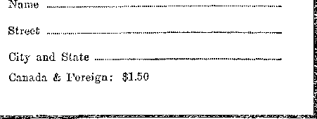

in this issue
JUDGMENT OF THE NATIONS Full text of last of a series of three addresses by Judge Rutherford, broadcast in watchtower national chain program.
every other WEDNESDAY
five cents a copy one dollar a year Canada & Foreign 1.50
Volume XI-No, 286
September 3, 19 3 0
LABOR AND ECONOMICS
The Cost of Industrial Accidents 779
Bargains in Men and Women . 779
Wages not High Enough . . . 780'
Mines of Somerset.....782
Toronto’s Community Chest . 782
The Fiercest Battle in Bombay 779
The Kellogg Peace Pact . . . 781
The Killings at Peshawar . . . 783
Socialism Being Forced On Us
All ......... 783
■SOCIAL AND EDUCATIONAL
Pungencies . .......779
The Crane Company’s Liberality 780
Rules of the Road in Europe . 780
Mass Vacations Popular . . . 781
How Masonry Originated . . . 783
When the World Went Mad . 787
MANUFACTURING AND MINING
Machine Production of Bulbs . 781
The Weighting of Silks . . . 782
FINANCE—COMMERCE—TRANSPORTATION
Merciless Buying Wrecks Soft
Coal Industry......780
London Goes Underground . . 782
POLITICAL—DOMESTIC AND FOREIGN
The Third Chamber at Washington ....... . . 771
The Net Cost of Yap .... 778
War Resisters in 1930 .... 779
SCIENCE AND INVENTION
The Deaf May Sip Music Shortly 779
Robinson Stenode Wireless Receiver ......... 782
HOME AND HEALTH
Goldenrod........784
Beware of Diet Fads ..... 785
You Can Tell the World . . . 792
Effects of Alcohol in Moderation 798
TRAVEL AND MISCELLANY
Babies Thrown Away in Shanghai 779
Unprecedented Hails in South Africa
RELIGION AND PHILOSOPHY
Transubstantiation at Stamford Bridge
Sinclair Goes After Cardinal O’Connell
If You Will Believe It . . 792
Published every other Wednesday at 117 Adams Street, Brooklyn, N. Y., U. S. A., by WOODWORTH, KNORR & MARTIN
Copartners and Proprietors Address: 117 Adams Street, Brooklyn, N. Y.f V. S. A CLAYTON J. WOODWORTH .. Editor ROBERT J. MARTIN .. Business Manager NATHAN H. KNORR.. Secretary and Treasurer
Five Cents a Copy—§1.00 a Year Make Remittances to THE GOLDEN AGE Notice to Subscribers : We do not, as a rule, send an acknowledgment of a renewal or a new subscription. A renewal blank (carrying notice of expiration) is sent with the journal one month before the subscription expires. Change of address, when requested, may be expected to appeal- on address label within one month.
The Golden Age is published in six languages: English, Finnish, German, Norwegian, Polish, and Swedish.
Foreign Offices
British ............. 31 Craven Terrace, London, W. 2, England
Canadian...........40 Irwin Avenue, Toronto 5, Ontario, Canada
Australasian . . 7 Beresford Rd.. Strathfield, Sydney, N. S. VL, Australia South Africa ............6 Lelie Street, Cape Town, South Africa
Entered as second-class matter at Brooklyn, N, under the Act of March 3, 1879.
Volume XI Brooklyn, N. Y., Wednesday, September 3, 1930 Number 283
TpVERY piece of legislation affects somebody in a financial way, and the one that is affected is for or against the bill, if he knows about it, and today he generally does. Or the bill affects the interests of himself or his friends in some other manner, and in this day of American high-pressure efficiency it has come to be the thing to look after what one regards as his interests. Hence we have lobbies at Washington,
Lobbying is the practice by nonmembers of influencing members of legislative bodies either for or against proposed legislation. Most progressive magazines today are in favor of lobbying at Washington, on the ground that a clean, honest, upright attempt to influence legislation is right and proper. How to get it clean, honest and upright is another matter.
Today Washington has every kind of lobby that the mind of man can conceive. Propaganda is worked overtime. One press agent sent out 9,025 specials to newspapers in one year. Each of these appeared or was intended to appear in a great number of papers, and to affect millions of readers. Thus public sentiment is worked up for or against a measure, and pressure is brought to bear on the legislator from the folks at home.
One of the most insidious forms of lobbying is the net spread for the feet of the legislator at Washington itself in what is called “social” lobbying. Those who are on the inside know for a certainty that whenever certain measures come up for consideration there are Washington families of great social prestige who entertain senators and congressmen lavishly. Flattery is the edge of the social lobby weapon. Many a brilliant and beautiful Washington woman has caused a legislator to vote contrary to his reason and common sense and the interests of his constituents.
When Joseph Tumulty was secretary to President Wilson he said that by watching the society columns one could keep tab on what this or that legislator was likely to do. Many men who go to Congress hoping to be of real service to their fellow men get roped in by social lobbies and turn out to be useless or worse.
“Legislative Agencies”
The influencing of legislation has become a science, and standardized, like everything else in America. Everybody expects that the United States Chamber of Commerce, the American Federation of Labor, the American Publishers’ Association, the American Railroad Association, the American Manufacturers’ Association, and so on down the line, will maintain legislative agencies in Washington. They would be considered foolish not to do so, and they send their most capable men and women to the capital.
The American Farm Bureau Federation, the Anti-Saloon League, the Association Against Prohibition, the American Legion, the National Coal Association, the National Council for the Prevention of War, the Federal Council of Churches of Christ in America—-if one started to name the lobbies, where would he stop ? There are admitted to be three hundred active and powerful lobbies in Washington. These lobbies write much of the legislation which afterward becomes the law of the land.
The American custom is to discuss bills by small committees, and the lobbies appear before the committees and give information, state their views, and make suggestions. The bills, when approved by the committees, are frequently carried through with little or no public debate.
The Chamber of Commerce has three hundred employees, and they are all kept busy. Col. J. H. Carroll, legislative agent for the Royal Dutch Shell Petroleum Company, the United Fruit Company, Cuban Sugar, and half a dozen railroads, has an income of nearly $150,000 annually. One lobby press agent has a salary of $25,000 and employs an assistant at a salary of $15,000. The American Legion lobby costs but $26,000 a year.
. 771
In Germany it is taken for granted that Big Business will, must and should have contact with the government, and hence there is a Parliament of Industry functioning, besides the Reichstag. There are similar provisions in Czechoslovakia, Latvia, Jugoslavia, Poland, Spain and Italy.
A Business of Big Dimensions
Several years ago the claim was made by Edward F. Grady, himself a legislative agent for the American Federation of Labor, that ho personally knew one hundred lobbyists in Washington each of whom received a larger salary than that of the president of the United States ($75,000 a year) and that, at that time, there were fully two thousand in the city.
It is said that even now these lobbyists are paid more money than is drawn by all the members of Congress put together. Many of them are grafters, pure and simple, and render no real service to anybody.
The most effective and dangerous ones are those who were former senators or congressmen. These have been known even to walk upon the floor of the senate or house while measures in which they were interested were being debated.
It will be on the mind of every reader of The Golden Age that we ought to say something about Big Business in this connection. The reason is so evident that any child can see it. Big Business finances politics, both parties, and when legislation comes up in which it is interested it makes it its business to renew the acquaintances which were inescapable while collections were in order. It is hard to go back on the paymaster, the one who furnished the collateral to insure election. Gratitude is expected, and usually forthcoming.
Recently we have approached the place where the paymaster himself becomes a legislator. In a country in which Grundy the Magnificent can become a United States senator anything may happen. Grundy is said to have raised $700,000 for the election of the silent statesman (who was silent because he failed to sprout an idea on any subject in twenty years of public life) and to have raised $1,000,000 to help the cause of Mr. Hoover. He was one of the impeccable souls that were present in the smoke-filled room in Chicago when it was unofficially agreed to turn the United States over to the Ohio gang, Harding, Daugherty, Jess Smith and others.
Attempts at Regulation
While the Devil is still running things, and human nature is what it is, it is hard to regulate such a business as lobbying. It is like trying to regulate bootlegging, or bribery, or holding companies, or the pickpocket business, or collections on account of purgatory.
In the days before the murder of Sacco and Vanzetti, while Massachusetts still had a few shreds of honesty, and of consideration for the opinions of the just and honest among mankind, an attempt was made to forestall present conditions as they now exist there and everywhere. Lobbyists must register with the sergeant-at-arms, give the names and addresses of their employers, and the terms of their employment. That was forty years ago and is interesting chiefly from a historic viewpoint.
Maryland and Wisconsin followed Massachusetts in an effort to lessen the evil by publicity. It was like asking bootleggers to advertise. There was no rush to get listed. Legislation in the same direction has been enacted in Utah, Tennessee, Oregon, Montana and Arizona.
In California and Georgia lobbying is a felony. In North Dakota and Wyoming it is bribery for one legislator to come to agreement with another, “You vote for my measure and I will vote for yours.” Legislators in South Dakota must take oath that they have not accepted free passes on railroads for any votes they may cast or any influence on legislation they may exert.
The New York law requires attorneys and agents who desire to lobby at Albany to file application with the secretary of state, setting forth in detail the services they expect to perform, and to make public a sworn statement of all expenses incurred in the performance of such services. This is like asking a hijacker to file an income tax report. The Congress at Washington makes spasmodic investigations of what is conceded to be one of the major industries at the capital.
The Tariff Lobbies ■
Somebody has described the 'American tariff as “a thing of duty and a jaw forever”. Every time it comes up for revision the ticket offices all over the country do a land office business in pasteboards having Washington as the destination, and the 100-percent-profit Americans who do not come themselves cheerfully chip in to pay the expenses of a representative. The only ones that are not represented in the Third Chamber are the common people. It is enough for them that they must pay the bills, in the end.
Last fall the United States senate began one of its infrequent investigations of the Third Chamber, and in three days found that the pottery interests had a lobbyist who was also a tariff commissioner. This is like a flock of bootleggers putting one of their number on the bench. His decisions would be friendly, to say the least.
Thereafter, the senate added a clause to the tariff bill providing a penalty of $1,000 fine or a year’s imprisonment, or both, upon any person, corporation, association or other organization that should attempt to interfere with or influence the work of the tariff commission. Thereupon Joe Grundy, head of the Pennsylvania Manufacturers’ Association, was made senator from Pennsylvania. Being actually now a member of the senate, he could do ‘legally, and with perfect security, what would have been illegal before this brilliant move was made.
Qualifying for the 100-percent-Profit Class
Mr. Hoover’s tariff bill has had a hectic career. Before Mr. Grundy was made senatorial representative for the august state of Pennsylvania there was much excitement in Washington when it was found that a friend of his, Charles L. Eyanson, assistant to the president of the Manufacturers’ Association of Connecticut, and, like Mr. Grundy, a lobbyist of first caliber, had been put on the payroll of Senator Bingham of that nutmeg state, as his private secretary.
Mr. Eyanson made a good assistant to the president of the Manufacturers’ Association. His job as private secretary to Senator Bingham let him into the secret hearings of the senate’s subcommittee on finance, with the result that forty-four of the fifty-two industries of Connecticut received tariff favors aggregating $70,000,000.
When Mr. Eyanson gets back to Connecticut he will still have to explain to his regular employers how he came to miss the remaining eight industries. Tie will be reminded that while he was in Washington he received a salary of $10,000 a year and his living expenses from the Connecticut Manufacturers’ Association, and that to deliver forty-four out of fifty-two industries over to larger profits is not enough. That is less than eighty-five percent, and not enough by about fifteen percent, to make him a true 100-percent-profit American. Grundy is the true model of the 100-percent-tariff statesman.
While the charges against Bingham and his private secretary were being aired it was publicly charged by T. L. Hill, the president of the American Society for the Promotion of Aviation, that Senator Bingham himself is president of an airplane trust that has worked for the diversion of millions of the government’s money to private pockets, and has shoved inferior aircraft on the army and navy air services, and at excessive prices, which inferior aircraft has caused the death of scores of pilots. It seems easy to see why Mr. Bingham is a senator.
The Arnold Lobby
W’hile the lobby investigations were under way special honors in that direction fell to the lot of J. A. Arnold, yclept manager of the Southern Tariff Association and of the American Taxpayers’ League. We have no desire to contradict the statement of Senator Caraway that Mr. Arnold is “utterly without regard to veracity”. This definition of a lobbyist seems like a good one and capable of extension much farther than Mr. Arnold goes.
It seems that having noticed the millions that are readily collected from northern manufacturers’ associations Mr. Arnold got the helpful idea that there are plenty of manufacturers in the new South and that if approached skilfully they also could see the tariff light which at 'Washington is not for long kept under a bushel.
His idea bore fruit to the tune of $200,000 a year, of which fifty-five percent went for the salaries of Mr. Arnold and ‘organization work’. The disbursement records were destroyed, as is the usual custom with the modern Ali Babas, but there were receipts of $1,000 or more from the Insull crowd, the Van Sweringens, Wrigley whose flavor lasts, the Westinghouse Airbrake Company, Armour & Company, and the nephew of Andrew Mellon. Mr. Grundy gave only $10 to this jackpot. 'When Grundy gives anything worth while he is going to get something for his money, and not give for the mere fun of giving.
One of Mr. Arnold’s enterprises is the National Council of State Legislators for the repeal of the federal inheritance tax. It was Mr. Arnold’s job to load entire legislatures on the trains and bring them into M ashmgton, all expenses paid, there to appear before the house ways and means committee to fight the estates tax.
Big estates all over the country were invited by Mr. Arnold to grease the wheels of this machine, and the 100-percent-profit Americans with swollen estates were glad to do what they could by this means to prevent the common people from, getting a fair deal. Mr. Arnold was on the witness stand for nine days.
The Cuban Sugar Lobby
“Hello! Hello! This is Mr. II. C. Lakin, of New York city, president of the Cuba Company. Did you get my letter ?”
“"What letter ?”
“What letters have you received?”
“I have one here which says, "Our knowledge of the desire of President Hoover is accurate, but naturally the sources of our knowledge should not be stated in writing.’ The same letter goes on to say, Tt is the custom of the beet interests to maintain a lobby in Washington. I think that eventually the Cuban interests should have a permanent office in Washington, but the fact that Cuba is a foreign country makes the old-fashioned lobbying dangerous for it to undertake. I do not approve of unguided entertainment of members of Congress. That form of lobbying is no longer fashionable in Washington.’
“I have another one which says, ‘Our chief reliance will be on Mr. Shattuck, who is a very intimate friend of Hoover, and has already talked with Hoover about this subject.’ The same letter shows a willingness to injure the foreign relations of the United States government, and an attempt to do it.
“I have another which says, ‘President Hoover has taken a direct hand. He has already suggested a possible solution to Senator Smoot and to Mr. Shattuck.’
“None of those just suit. I guess I shall have to fall back on the letter from that great American statesman and patriot, General Crowder, in which he said, ‘Discussed with Mr. Shattuck the opportune time to see Smoot and contribute what he could do toward perfecting sliding tariff, but always with the idea of making Smoot father the proposition in the name of beet sugar, as a means of giving it added strength.’ ”
To these exhibits, brought out at the investigation of the Cuban Sugar Lobby, v<e may merely add that the Mr. Shattuck thrice named in the letters denied that he had discussed sugar legislation with the president. Looks as if somebody’s mama or papa had not spanked him enough for fibbing when he was little. In the background, President Hoover may be discerned carefully sucking the molasses from his fingers, and singing, in between, “Oh how sweet it will be in that beautiful land!”
Mrs. Gladys Jones, one of the sweet feminine agents of the sweetest of lobbies, told the senate investigating committee that she received a salary of $230 a week and expenses from the United States Sugar Association. The expenses amounted to about $500 a week. In addition, she received $1,333.33 a month from the American Chamber of Commerce of Cuba. She refused to give the name of a lobbyist who, she said, burned his letters every forty-eight hours to prevent them from getting into the hands of investigators.
The Shipbuilding Lobby .
Does anybody suppose that if the sugar lobby could afford to spend half a million dollars on its Washington office in eight years the Bethlehem and other great ‘steal’ companies would withhold any loose change that could be advantageously used in getting Uncle Sam to spend money for battleships or cruisers each with costs running into the tens of millions?
Wm. B. Shearer told the senate investigating committee that the first person who talked to him about acting as chief lobbyist and propagandist for a big navy was Charles M. Schwab. Mr. Schwab testified that he knew nothing about Mr. Shearer. “Check and double check.”
H. C. Hunter, counsel for the associated shipbuilders, of whom Mr. Schwab was the most prominent, testified that prior to the Geneva conference he paid Mr. Shearer $7,500 for three months’ work, and in three years paid him more than $50,000, none of which, of course, appeared on the shipbuilders’ books. Bookkeepers make only such marks as are desired.
When the time came for the Geneva conference Mr. Shearer was the man of the hour. So capable a periodical as the Manchester Guardian charges this man with having deliberately wrecked the conference, the outcome of which presumably meant so much to millions who were interested in the cause of peace. He sent reports regularly to the shipbuilders.
Shearer received extra pay for his work at the Geneva conference. The executives of the shipbuilders apparently did not know what he went there for, though in 1924 the three firms which employed him were awarded contracts for five cruisers at an added cost of $15,000,000 over the bids submitted by the government's own yards. It is Uncle Sam who pays.
At Geneva Mr. Shearer obtained a seat in the famous Glass Room of the League Secretariat, and was supplied with official information from the United States Navy Department. During the seven weeks required to wreck the conference he published a tremendous amount of elaborate data showing that he was what he claimed to be, a naval expert.
Referring to Mr. Shearer’s suit for $250,000 against the shipbuilders who employed him, the Nev/ York Times said:
To most of those who saw him at work in Geneva, the news that Mr. Shearer has had to sue his employers for money he alleges was due him, will cause surprise. If, as he says, he was employed to help wreck the conference, the opinion at Geneva would be that he earned his money.
“The Active and Pernicious Power Lobby”
That is what Senator Lenroot called it while he was still in office as a senator, but as soon as his fellow Americans elected him to leave the senate and to get a job somewhere else, he took a $20,000 job for the power trust, and then thrilled America with the declaration that there is no power trust and no power lobby, which he had previously stated was “infesting every nook and corner of the capitol”.
It is of not much avail now to write anything about the activities of the power trust—since they showed their power to dictate platforms at both Kansas City and Houston right while they were exposed by the Federal Trade Commission as engaged in the greatest rascalities ever practiced in this country.
The power trust seems to have come aw’ay from Kansas City with everything they wanted in the way of platforms and candidates, but if they wanted anything since then they have not been handicapped seriously in getting it. The impudence of this crowd of highwaymen in purchasing and using editors, professors, Chatau-quas, school book publishers, banks, publicity experts and everybody else who is willing to work for money is beyond belief. They have had their tools working in Washington in places of trust. For a sample, take the following from the Boston American:
Mrs. Minnie L. Ward has been for many years file clerk of the Power Commission. She now makes the criminal charge that F. W. Griffiths, Bonner’s chief clerk, set about to rifle her files of the incriminating letters. It upset Mrs. Ward to the degree that finally she brought a dozen eggs to the office, and, exercising-rare restraint under the circumstances, slung six of them with good aim at Mr. Griffiths, who promptly suspended her.
The last we knew, this woman, who was true to her trust, was still out of her job. The thing is working the way it nearly always works: the one who is honest is the one who is punished for calling attention to the dishonesty.
Boulder Bam and Muscle Shoals
The whole reason there has been so many months of wasted time spent in discussing Boulder Dam and Muscle Shoals is that the power trust has been determined that, as far as possible, the American people shall continue to pay for electricity fifteen to twenty times as much as it costs. They are perfectly willing Uncle Sam should spend his money for building-expensive dams, but they are not at all willing that he should let the people have the power after they have paid for producing it unless they pass that power through the hands of the power trust so that the costs to the people can be multiplied by fifteen or twenty.
There is evidence that the American Farm Bureau Federation has been used as a cat’s-paw by the power trust to help them get Muscle Shoals power away from the control of the government. Claudius IL Huston, chairman of the National Republican Committee, right-hand man of Herbert Hoover when the latter was secretary of commerce, is also involved in the Muscle Shoals scandal. Does anybody suppose that Mr. Hoover will be ungrateful to Mr. Huston, who was so helpful in boosting him into the presidency?
The New Republic gives us the following interesting summary of items that are of unusual interest to us since the elevation of Mr. Charles Evans Hughes to the Supreme Court of the United States, and we have only to add to this that immediately, on the day following the confirmation of Mr. Hughes, public utility stocks on the New York Exchange bounded upward in price by an average of eight points. The New Republic said:
Moreover, the recapture clause of the bid, which should provide for the government’s recovery of Muscle Shoals on the failure of the lessee to manufacture fertilizer, doesn’t guarantee that at all. Drawn up by that great legal mind, Charles Evans Hughes, the recapture clause consists of 21 lines of whereases, provisos and heretofore, which, translated into intelligible English, state that in fifteen years (not until then, mind you), if the lessee is converting all the power at Muscle Shoals into profits and none into fertilizer, a board may (not must) file a complaint with the Secretary of War; that the matter is then to be submitted to arbitrators, who are to hold hearings; that if the arbitrators agree with the board that the suspension of the manufacture of fertilizer is likely to be permanent—no, the lease isn’t canceled yet—■ the matter then is to be referred to the Secretary of War; that he is to refer it to Congress, which may acquit the company of the duty of making fertilizer; finally, in case Congress fails to act, the Secretary of War may acquit the company himself.
The Resting Places of Patriots
It will be remembered that during the reign of the Ohio gang everything was running in oil, so to speak. Mr. Hughes was at that time commonly referred to as the “Secretary for Oil”; and when a statesman like Mr. McAdoo left Washington he headed straight for oil, and went into it so deep he never emerged.
We are not claiming that there is even yet lack of oil wherewith to calm the troubled seas of the as-it-were patriot, but everything today is looking toward electricity, and the hydroelectric power house seems now to be the haven of rest for the true 100-percent-profit American patriot.
The Congressional Record says modestly:
One of the most striking and effective means employed by the Electric Power interests to overcome opposition is to eliminate their opponents by absorbing or converting them. An astonishing number of men who were formerly active proponents of Boulder Dam are now at work for the power lobby at nice fat salaries.
There is always plenty of money wherewith to pay the converts. Anybody who can sell Iris goods at fifteen to twenty times what it costs to make them, and can have a monopoly in cities by the score, and can use strong-arm methods to collect his bills, and has the legislatures and courts and executives to fall back on, can get what he wants and all he wants in the way of money, and will spend it to get more.
The Congressional Record says of one gentleman that “J. S. S. Richardson, former executive in the United States Army Secret Service in France, received $22,125.18 for nine months’ work as publicity director of the New York Office of the Power Lobby”.
The same authority says that “Josiah T. Newcomb, chief lobbyist, drew $39,994 for nine months’ work. Stephen B. Davis got $33,735.64 for the same length of time. He was formerly Hoover’s solicitor in the department of commerce and is now director of the committee’s activities in New York”.
Richard Washburn Child, ex-United States Ambassador to Italy, received the nice little sum of $7,500 for preparing a pamphlet in opposition to the Boulder Dam bill. If you don’t see what you want, pay for it.
The power trust means business. It was so taken with one of Bruce Barton’s effusions on behalf of Big Business that it is said to have placed 67,000,000 copies of his panegyric in the mails. The bill for these envelope stuffers ran to the tidy sum of $175,229. But let nobody think it was misspent.
If you have a monopoly of something the people must have, and if you are authorized to charge them fifteen to twenty times as much for it as it is worth, you cam afford to put out millions for the defense of your ill-gotten pile and your intent to add to it. If any statesman rises up against the power trust and he cannot be bought off, he is publicly labeled as a Bolshevik, so as to destroy his influence.
Before leaving the discussion of this juicy power trust lobby we feel that we ought to say one more word about President Hoover’s personal friend, Mr. Claudius H. Huston, one time colaborer with Mr. Hoover in the department of commerce, but more recently chairman of the Republican National Committee.
It seems that Mr. Huston in his official duties as lobbyist for the power trust, Muscle Shoals branch, received from the Union Carbide Company two checks totaling $36,100, and deposited them to the credit of his margin account with a New York stockbroker. He made a nice profit and kept the profit. But suppose he had guessed wrong and the market had gone the other way. Well, what of it? He would still have had influential friends.
The Anti-Saloon League
The Anti-Saloon League was “born of God”; so said F. Scott McBride, general superintendent of the organization. And from what Judge Rutherford has recently said on the subject, and from what we see written in John 8: 44, we judge that this statement was made with some regard to fact. The only question is as to which god is meant. And 2 Corinthians 4:4 gives us the answer.
Dr. McBride went on to say that the League was horn at a prayer meeting and that the work of the League is done in close communion with the churches, the same institutions that everywhere resist the message of the kingdom of God and oppose Bible Students in their work.
Dr. McBride is alleged to have said in January that 90 percent of the work of the League clusters around the elections, and four months later to have said on the witness stand that only about 5 percent of the work of the League is directed toward political ends. The difference between 90 percent and 5 percent is 85 percent, in only four months; and for a thing that is “born of God” that is an awful big change in a short time. Dr. McBride is a “doctor of divinity”.
Representative Tinkham, of Massachusetts, claims that the Anti-Saloon League has collected and disbursed $67,565,313 since its formation, but has violated the Federal Corrupt Practices Act by making what amounts to only nominal returns to the clerk of the house of representatives of the vast sums which it collects and expends for political purposes. It may be a mental struggle on Doctor McBride’s part to get around this that caused him to change his mind about how much of the League’s effort is of a political nature.
The state leagues of the Anti-Saloon League are composed of delegates elected by the various church groups. These in turn elect the 154 members of the national board of directors. The League is said to have written the Volstead Act. It furnishes briefs to prosecuting attorneys, and is, in effect, a government within a government. It keeps a check on district attorneys and state governments.
The Methodist Lobby
The Methodist church is profoundly impressed with the idea that an aggregation of talent such as Warren G. Harding, Harry M. Daugherty, Albert Bacon Fall, Harry F. Sinclair, et ah, when acting as the government of a country like the United States of America, constitutes an integral and important part of the kingdom of God.
So long ago as when Ulysses S. Grant was president of the United States he said that fin America we have three political parties, the Republican party, the Democratic party, and the Methodist Episcopal church’. And the ‘good old M. E. church’ is still willing to show everybody else the right and wrong on every question, and in detail, regardless of whether it knows it itself or not.
The Methodist church has denied that it is lobbying. On the other hand, an official publication of the Methodist board says, “Fortunately we have the location of all locations, just opposite the Senate wing of the capitol”; and there is still to be explained the statement of Bishop McDowell, that “I think God himself kept those lots vacant for Clarence True Wilson to see when the time came for a Methodist building in Washington”.
To the stranger in Washington the Methodist building looks like one of the government’s own buildings. Maybe it is near the senate building so that when one of the senators wants to do a little praying he can go outside of the government premises, where there are so many politicians about, and get into a more godly atmosphere.
It is considered much out of place in Washington for even the august United States senate to dare ask any questions of some of the Methodist hierarchy. At least that is what Bishop James Cannon, Jr., of the Methodist Episcopal Church South, seems to think. At any rate, he flatly refused to answer many questions, and at length left the stand in open violation of the senate committee’s expressed desire to have him remain. He is charged with the most flagrant case of contempt of court ever known in the history of the United States senate.
Bishop Cannon thinks that Christ Himself “took an active part in the political life of His day” and that this eventually “led to His crucifixion”. This shows, as we should expect, that the bishop knows little or nothing of the contents of the Scriptures. Jesus was killed because He showed up the hypocrisies of the scribes and Pharisees and hypocrites of His day. As far as the Roman government was concerned, He kept His hands off.
There is no record that Jesus ever gambled on the stock market; but Bishop Cannon seems all betarred with stock market operations, if we may believe the public press. Moreover, the senate is unable to understand why when E. C. Jameson, of New York, gave Bishop Cannon cash and checks of the amount of $65,300 for use in the anti-Smith campaign in Virginia, in 1928, Bishop Cannon’s reports to Congress showed receipts of only $17,000. If anybody but a bishop had held out $48,300 from a report like that he would have been in danger of a ride to Atlanta under the Corrupt Practices Act; but maybe it is all right in a bishop.
Some of the Methodist brethren in the house and in the senate are very indignant over what they term "an improper activity, the work at Washington of the Board of Temperance, Prohibition and Public Morals of the Methodist Church, in its manifest efforts to dictate and control legislation”. Senator Royal S. Copeland, of New York, himself a Methodist, was recently the spokesman of these sentiments for the group of statesmen he represents.
Other Religious Lobbies
It must not be thought that the Methodist church is the only one maintaining a lobby at Washington. The Federal Council of Churches have manifested their intent to grapple with every problem that is being considered at the national capital, and the facts show that there is little legislation in which they have not interested themselves.
The churches have sense enough to know that they were used as cat’s-paws during the World War, as in every previous war, and they think that if they are to be recruiting agents in the next war it is only fair that they should have something to say beforehand.
The name of the Roman Catholic lobby at Washington is the National Catholic Welfare Conference. There are eight bureaus, cooperating with the federal government in about every direction that could be imagined. Archbishop Hanna, chairman of the conference, in an address in San Francisco, said of the Catholic lobby: “Now, in these days of the closest organization the world has ever known, unless wo emulate those who oppose us and organize for our own defense, we will succumb to persecution.” ■
The Form recently had an extended study on the various church lobbies at Washington, and in conclusion said:
So we see in Washington two powerful religious lobbies, one representing Protestants, one representing Catholies, sometimes opposed to each other, sometimes in mutual support. There is little to choose between them. Their spirit, as shown in the pronouncements of their leaders, is the same. They are the church militant in politics, resolved to make people conform by law to their conception of ‘right fundamental principles of morality’. Their chief point of difference as far as the public interest is concerned is that the Methodist Board would prevent the individual from forming his own drinking habits and the Catholic Board would regulate man’s—and especially woman’s—sexual life.
Some American statesmen do not relish this ecclesiastical interference in the work of the regularly chosen representatives of the people, and have said so. One of these is Justice J. K. Hines, of the supreme court of Georgia, who recently expressed the following opinion:
Whenever a preacher undertakes to use the pulpit of his church to advocate or to denounce the cause of any political party, or whenever any church, as an organization by itself or by its councils or commissions, undertakes to participate in the administration of the government or in the enactment of laws, it violates the principle of separation of church and state and its action should be suppressed.
The Net Cost of Yap
Woodbow Wilson kept us out of the war.
That is, he did until he was reelected, but not afterwards. When the United States finally went into the war it sought as its share the island of Yap, in the Pacific, which island it did not get, as its contributions to the cause were not large enough’. However, Uncle Sam 'did spend the neat sum of $37,573,960,000 in trying to get Yap, and many people who have tried to find that little dot on the map have wondered if it was worth the price paid, to say nothing of what it would have cost to actually get it.
Big Hailstones in Greece
HAILSTONES as big as tennis balls are reported as having killed twenty-two persons in Greece. As many more were seriously hurt. Hailstones of this size had not been previously seen in Greece.
Babies Thrown Away in Shanghai
IT COMES as a shock to the nerves to find that even in Shanghai Chinese women think nothing of throwing their babies into the river, and are eager to sell them for as little as twenty cents each.
War Resisters in 1930
T N 1930, after all the peace pacts and other pacts have been signed, war resisters are subject to arrest and imprisonment and rearrest and imprisonment in Holland, Switzerland, Czechoslovakia, France, Russia, Finland, Jugoslavia, Spain, New Zealand and Poland.
Fifty-three Stores per Chain
ON MARCH 30, 1929, there were 1,050 chain organizations operating 56,674 retail stores in the United States, or approximately 53 stores to each chain. Some of the chain stores are now beginning to extend credit to customers, despite the signs which read to the contrary.
Wear fellow in Mosquitoland
Experiments show that mosquitoes win not willingly go near anything that is yellow in color. This seems to suggest that in mosquito time the thing to do is to wear yellow clothing, and that it would be a good idea to paint screen doors and windows accordingly.
Unprecedented Hails in South Africa
HpERRIFIC hailstorms in South Africa laid the country in places submerged under ice a foot deep. The menacing roar of the approach of this storm could be heard for miles. Roofs were torn and broken. The stones were of fantastic shapes. Some resembled human hands on which were long jagged fingers. All plants in the track of the storm were completely destroyed. Trees were completely stripped of their leaves. The hoods of cars were torn to pieces. Galvanized iron tanks had great holes battered in them.
Nobody Dares Testify
IL/TANY have wondered why gang murders in XV-u Chicago continue year after year with few interruptions and no diminution. The reason is that nobody dares testify as to what he has seen. Witnesses must flee the city, keep silent, deny the truth, or be slain.
The Cost of Industrial Accidents
HIHE number of disabling industrial accidents in the United States is estimated at 2,500,000, of which about 21,230 result in death. The annual wage loss on account of these accidents is about $1,000,000,000, four-fifths of which is borne by those who suffer the accidents.
In Philadelphia in June
IN PHILADELPHIA, in June, so the welfare officials of the city say, there were thousands of children of unemployed parents who had never previously asked for aid who were reduced to living on one meal a day. If this is so in June, what will it be in December?
Bargains in Men and Women
ANEW YORK employment agency is announcing bargains in men and women, hundreds of office workers that must be placed at once and that are willing to work, and must work, for whatever wages can be had, usually about seventy percent of the wages they were accustomed to receive before the stock crash.
The Deaf May Sip Music Shortly
THE professor of physics at Cornell Univer-J- sity has invented a device by means of which the deaf may hear music when they bite upon a piece of wood placed in contact with a vibrating mechanism a little larger than a baseball. Two-thirds of the deaf can thus hear through teeth vibration, it is claimed.
The Fiercest Battle in Bombay
THE fiercest battle in Bombay was fought on
June 22. Reports of the battle are that there were 550 casualties, a number of them women, but no police were hurt. British leaders are finding it harder and harder to get their men to fire on unarmed and unresisting natives, some of them old men and women. An American missionary has been expelled from Madras for hobnobbing with the nonresisters.
Wild Camels in Australia
UNTIL recently camels were used for transport in Australia, but with the wider use of the automobile truck they were no longer needed and were turned loose. Now they are crashing through the fences everywhere and doing immense damage. How their rapid multiplication can be stopped is not yet known.
A Great Inventor Passes
Elmer Sperry, one of the greatest inventors of all time, has passed from this life. He is accredited with nearly four hundred devices, most of them in steering mechanisms. This number is about double that accredited to Mr. Edison. Mr. Sperry was the holder of seven of the most prized American medals for scientific achievement.
The Crane Company’s Liberality
SETTING a splendid example of wisdom an'd justice, Richard T. Crane, Jr., president of The Crane Company, Chicago, has in the last four years made stock gifts to employees of the company aggregating $10,000,000. The stock goes to the employees who have been with the company over ten years and have helped to make it what it now is.
A Little Lesson in Arithmetic
THE Akron Beacon Journal is conductinglittle lessons in arithmetic for the benefit of business men. It has recently proposed the little formula that 200 wage earners at $2.50 a day are worth no more to stores and banks than 100 at $5. This ought to soak in and be really helpful to those who think the trouble with America is that wages here are too high.
Merciless Buying Wrecks Soft Coal Industry THE Consolidation Coal Company, Charles
ton, W. Va., has issued a statement which virtually admits that merciless buying has wrecked the soft coal industry. When a purchasing agent gets so efficient that he takes all the profit out of an industry he is really cutting off his own income. Business thrives on profits, and it is as necessary for a purchasing agent to see other businesses thrive as to see his own. The recent stock smash shows clearly that when one business suffers, every other business suffers; and when it suffers in America it suffers everywhere to a very great extent.
Michael Glad to Dodge the Crown
"OY HEN little Michael found he had lost his ’ ’ job as king of Rumania he said to his father, “Thank goodness you are back and will be king. I have been terribly tired of wearing long trousers and a stiff hat, and going to places where I do not want to go at all. I am not king any more. Can’t I go out and play with the other kids now?”
Japanese Gods and Goddesses Will Get Facts
ON THE return to Japan of the Japanese delegation from the London Naval Conference they split up and went off to different shrines to tip off the gods and goddesses as to just what happened while they were away. It is comforting to know that these old gents and ladies will get the information which otherwise they would have no way of getting.
Love for the Young
T T SEEMS inherent in all creatures to love the young. In Australia it was recently discovered that for months a child had had a dangerous tiger snake as a pet and was accustomed to let the snake feed out of its bottle. It did not hesitate to pet the snake on the head and the snake did not resent it. The bite of this snake is fatal.
Rules of the Road in Europe
DRIVING from Norway to Italy the automo-bilist keeps to the right through Norway, to the left through Sweden, to the right through Denmark and Germany, to the left through Czechoslovakia and Austria, and to the right through Yugoslavia and into Italy. Berlin has 344 traffic rules, the violation of any one of which may mean a fine of $36 or fourteen days in prison.
Wages Not High Enough
JN THE year 1927 the combined values of manufactured and agricultural products in the United States was $72,450,000,000 and the combined wage bill of the country, including amounts paid to executives and office staffs, was $50,058,000,000. The difference between these two amounts is represented by goods of the value of $22,400,000,000 which the workers and executives were unable to purchase because their wages were not large enough.
Lewis of Lewisite Gas Fame
rofessob Lewis, of Berlin, inventor of Lewisite and some thirty other types of poison gas, claims that against every one of these
gases all antidotes and all protective measures are virtually useless. Every great country in the world, including the United States, is studying and developing and storing these gases in preparation for the coming conflict.
. Pope Gets a New Title
THE regular titles of the pope are “Vicar of Christ”, “'Successor of St. Peter,” “Bishop of Rome,” “Archbishop and Metropolitan of the Roman Province,” “Primate of Italy,” “Patri.. arch of the West and Supreme Pontiff of the Universal Church.” He now has a new official designation, “Sovereign of the State of Vatican ; City.”
Pope Just 'Missed Getting Hit
HE other day the pope just missed gettinghit. Immediately over his head the huge
glass face of a clock fell off, but was caught and held by the iron hands of the timepiece. It seems as though somebody or something is always bringing the attention of ecclesiastics to the fact that they need to watch the timepieces. It is not known if the clock that came near hitting the pope was an alarm clock.
The Kellogg Peace Pact
INCE the Kellogg Peace Pact was signed there has been a great boom in the building
of cruisers. It is claimed that Italy was building more cruisers last year than were building in the whole world in 1913. The munition business is also in good shape in both Britain and the United States. Any country that wants to start a war knows where weapons can be had quickly in any quantity.
Cannon Will Soon Be Obsolete
I T IS good news, in one way, that cannon will soon be obsolete; but it is mighty bad news in another. It is now predicted that in the next war rockets will be used instead of cannon. The rockets will be packed with poison gases, liquid fire, shrapnel or smoke-producing powders, and their contents can even now be landed within fifty feet of the desired point when set off from a place a mile distant.

Machine Production of Bulbs
WELVE years ago it took one man an entire day to make 40 electric light bulbs. Now a machine will make 73,000 bulbs in 24 hours, and each such machine has placed 992 men on the scrap heap. In that period of time the jobs in the manufacturing industries have decreased by 585,000 and the population has increased by 5,500,000. That, by the way, is just about the number of people now estimated as out of work.
Not Real Public Utility Men
'VO men who posed as public utility men entered and robbed a house in Hollywood,
California, and in the course of the process overlooked a diamond brooch worth $25,000. The reason they overlooked the brooch is now plain, Had they been genuine public utility men the brooch would certainly have turned up missing. It is evident that these amateurs had not been properly trained.
Mass Vacations Popular
HPHE mass vacation system as practiced by “S" the Watch Tower Bible and Tract Society is growing in popularity. Sixty-five large plants in the country now close shop entirely or almost entirely while the bulk of the workers take a two ■weeks’ layoff at the same time, and on full pay. When work is resumed all are in good condition, and the vacation season has given the employees opportunity to meet one another socially.
Public Utilities in California •
T THE annual convention of the National
Electric Light Association, recently held in San Francisco, Paul M. Downing, general manager of the Pacific Gas and Electric Company, made the statement that “the electrical industry on the Pacific Coast is opposed to public ownership of utilities but it is strongly in favor of their ownership by the public”. Stripped of its foolish phraseology this simply means that the electrical industry of the Pacific Coast does not want the general public to be profited and benefited by the low cost at which electrical current can now be manufactured and distributed, but it is willing and anxious to take in as shareholders whatever number of the public can be taken in, so that their mouths may be closed because theii- bellies are full.
Mines of Somerset
J N THE mines of Somerset, England, coal is A hauled through the mines in tubs by boys who work naked except foi’ boots and short underpants. Around their waists is a tarred rope which passes between their legs and is attached by a chain and hook to the loaded tub of coal. The loads in the tubs are two hundred pounds, and there are no wheels beneath them. It would be hard to think of a more inhuman, stupid, inefficient system, or lack of system.
Mayors Object to Having Peasants Stabbed
IT COSTS Spain more to raise wheat than it does to lay American-grown wheat on the doorstep. As a consequence the poor Castilian peasants made a demonstration asking that a minimum price be placed on wheat in Spain. The government refused and had the police charge the poor peasants, wmunding them with their sabers. Thereupon a hundred Spanish mayors resigned in protest. Hurrah for mayors who do not want the common people stabbed!
The Way to Resume Is to Resume
A GREAT financier once said that 'the way to resume specie payments is to resume’.
He expressed a great truth. The same is true about employment. The way to resume is to resume. Put the unemployed at work at road building or any other constructive work, and in a little while their needs of clothing, houses, furnishments and a thousand arid one other things will make everything hum. It is estimated that the United States lost $1,000,000,-000 of buying power through unemployment during the first quarter of 1930.
Transubstantiation al Stamford Bridge
AT THE Stamford Bridge Football Ground, England, Sunday, June 29, high churchmen of the Church of England openly celebrated mass in the manner of the central ceremony of the Roman Catholic Church. This practice of Avhat is called transubstantiation is a rite in which a sacrificial priest professes to change a substance of flour and water into the true body and blood of Christ in a miraculous manner. The proceeding is wholly unscriptural and wholly unreasonable, and Britain is rising in protest against such acts within the church supported by British taxpayers.
London Goes Underground
T N REBUILDING some of her subwrny prop-erties London is planning for numerous shops underground. These have not been a success in New York, most of such shops not now being used for the purpose for which they were originally built. New York is looking upward rather than downward, and it is highly probable that another generation will see numerous streets high in air with shops on other levels than those now used.
The Weighting of Silks
"D ESEARCH workers for the American Home Economics Association found only two dresses made of unweighted silk. One sold for all silk was all rayon. Ninety percent of the dresses contained fifty percent of weighting. Many of them contained so much weighting (chemicals) as to make their life only about four months. Forty out of forty-two clerks misinformed the purchasers. Dresses of the same material, made to the same pattern, were priced at $11.95 and $59.50. Clerks in the highest-priced stores were just as unreliable in their statements as clerks in the cheapest stores.
Robinson Stenode Wireless 'Receiver
T T IS the claim of Dr. Robinson, inventor of -*• the Stenode wireless receiver, that broadcasting stations may now be multiplied many times and that with the Stenode receiver any station may be received with perfect clarity, to the exclusion of all others. It is also Dr. Robinson’s claim that whereas the present-day capacity of a telegraph line is about 500 words a minute the Stenode will enable it to easily handle 20,000 words a minute. If these claims are true the entire business of radio and telegraphic communication will be revolutionized. The Stenode has been described at length in the Manchester Guardian.
Toronto’s Community Chest
TORONTO has a community chest, going under the name of Federation of Community Service. This is a high-sounding name and ought to represent much unselfish effort for the public in these days of unemployment. The annual report has just been filed. It shows that this community chest gave $33,776 for relief but that it cost $83,104 in salaries and expenses to do it. For every dollar of relief accorded the unfortunate it cost $2.47 to hand it over the counter. At first glance it looks as if the man behind the counter took himself too seriously, at least on pay day. Wonder how this thing goes in America.
The Killings at Peshawar
NDER this heading The Nation tells us that in the unarmed resistance in India some persons who exposed themselves to the firing of the British soldiers received as many as twenty-one bullet wounds in their bodies. Boys, old men, anybody who stood up and asked to be shot, was immediately fired upon. This state of things continued from eleven o’clock in the morning until five in the evening. From time to time truckloads of the victims were carried off and burned. There were sixty-five bodies left on the field at the close of the day. Many noted Indians are giving up their decorations and British titles, and official district and municipal boards are resigning in great numbers throughout India. Women are taking an active part in the Indian campaign. There has been a nationwide boycott of foreign cloth. Peasants are refusing to pay taxes. Indian troops have mutinied in some places. In other places persons wearing foreign cloth have had their clothing stripped from them. The native medical profession have boycotted English drugs. There have been serious riotings in Bombay, with many killed. And Russia is always trying to find a way into India through the Khyber Pass.
Socialism Being Forced on Us All By G. B. Shaw [Broadcast by British Broadcasting Co.]
GOVERNMENT, which used to be a comparatively simple affair, today has to manage an enormous development of socialism and communism. Our industrial and social life is set in a huge communistic framework of public roadways, streets, bridges, water supplies, power supplies, lighting, tramways, schools, dockyards and public aids and conveniences, employing a prodigious army of police, inspectors, teachers and officials of all grades in hundreds of departments. We have found by bitter experience that it is impossible to trust factories, workshops and mines to private management. Only an elaborate code of laws enforced by constant inspection has stopped the waste of human life and welfare they cost when they were left uncontrolled by government. During the war our attempt to leave the munitioning of the army to private enterprise led us to the verge of defeat and caused an appalling slaughter of our soldiers. When the government took the work out of private hands and had it done in national factories it -was at once successful. The private firms were still allowed to do what little they could; but they had to be taught to do it economically, and to keep their accounts properly, by government officials. Our big capitalist enterprises now run to the government for help as a lamb runs to its mother. They cannot even make an extension of the Tube railway in London without government aid. Unassisted private capitalism is breaking down or getting left behind in all directions. If all our socialism and communism, and the drastic taxation of unearned incomes which finances it, were to stop, our private enterprises would drop like shot stags, and we should all be dead in a month. What we have to ask ourselves tonight is not whether we will have socialism and communism or not, but whether democracy can keep pace with the developments of both that are being-forced on us by the growth of national and international corporate action.
How Masonry Originated
Burns Strader, in an article in the Kansas
City Freemason, gives the following statement as to how Freemasonry originated. To readers of The Golden Age this tells far more than Mr. Strader has any idea, because it plainly links up Freemasonry with demonism. However, -we give the paragraphs which tell the story:
Two great civilizations are responsible for the institution we now know as Freemasonry. The valley of the Nile gave us Freemasonry in its speculative form; the Euphrates valley is the birthplace of the operative phase of the science.
In the valley of the Nile and in the valley of the Euphrates, two great civilizations were contemporaneous. One race nurtured and cultivated the things of the spirit, and the great buildings and structures of Egypt were temples erected and dedicated to the gods who represented and exemplified the highest spiritual conceptions of that day.
The Egyptian built of stone. It w'as his convenient material, and his edifices mark the aspirations of the human soul. The skilled workmen of Egypt went abroad to erect great temples in neighboring lands, and wherever her craftsmen went they carried the esoteric principles of her religious faith.
The secrets of the art of building were jealously guarded by the Egyptian priesthood, and none was initiated into those secrets save the select, the faithful and the worthy. The builder was a member of the sacerdotal class, and enjoyed the privileges of the select. Wherever he carried on his operations in neighboring lands the mysteries of Egyptian religion were communicated to the select few.
The temple of Osiris began to take form on the eastern shore of the Mediterranean, and the mysteries of Egypt began to shape and form and outline and tincture and. color the thinking and the religious philosophy of her neighbors. The gods of Egypt were the gods of glory and beauty. They lacked the attribute of power to make them effective.
In the valley of the Euphrates another culture had taken form. The brick-built temple of the Chaldean was the abiding place of his gods. His was a god of power and force, his was the spirit of direct achievement.
The influence of the Chaldean and of his conception of his gods and of his spiritual faith flowed to the north and west to the eastern shores of the Great Sea, until the meeting of the streams of philosophy and speculative thought brought about a comingling of ideas and an exchange of views.
The gods of beauty acquired the additional attribute of power and the gods of Greece and Rome took shape and form. The direct thought from the Mesopotamian valley took on the vesture of speculation, and the great systems of thought known as the Mystery religions came into being. .
Wherever the builder has wrought, wherever his genius has found expression, whether in the substantial edifices of Egypt, the brick arched temples of Accad, the graceful examples or architectural orders in Greece and Rome, the exquisite form of the Gothic art, there has he fixed in stone and mortar the aspirations of his soul. The Temple of Luxor, the recently excavated home of the Moon God in Ur of the Chaldees, the Parthenon at Athens, the temple of Jupiter at Rome, the graceful Alhambra at Grenada, and the Cathedral at Milan, all had the same spiritual ancestors, and are cousins in blood, each to the other. Through them “the Tabernacle of God is with men.”
Golderti’od By Dr. Hilf (Ohio')
ON PAGE 520 of The Golden Age mention is macle that Henry Ford is going to make rubber tires out of this prolific-growing but not sufficiently appreciated, beneficial plant. There are hundreds of various plants growing for the welfare of mankind, but they are called weeds and considered a nuisance because the people are ignorant of their great value, and goldenrod is one of the misdeemed blessings. About sixty-five years ago, when I studied medicine in Germany, we students were not raised to medical guessers or to expert ball players, but had to study botany and the knowledge of making medicine of all these harmless plants of which our present-day M.D.’s have no idea. "What I have learned about goldenrod I wish to publish now for the good of those who might have occasion to make use of it.
Goldenrod gathered while blooming and dried in a shady place is of healing quality if powdered and spread over wounds of any kind. In case of gravel in the kidneys or bladder, boil about one and a half ounces in a quart of water (leaves and blossoms) for a few minutes, let it cool off, and drink it like other tea, in three portions each day. Milk or honey for making it taste better is permissible. Said decoction is very good as a gargle in case of throat trouble. The tea is also healing in case of dysentery, diarrhea, or bloody flux. To boil the herb in white wine would make it more effective, but in our liberty-suffocating country it is a crime to have wine in the house, unless you get it from privileged profiteers, pay the M.D. $2 for the prescription and the druggist $2 for a quart.
If anybody wishes me to give information on any plant, I, as an experienced botanist, will do so in an article to be published in The Golden Age for the welfare of many. Private correspondence I cannot carry on, because I am eighty-three years of age, work all day, and sometimes need rest in the evening.
Beware of Diet Fads
ASSORT time ago the Ehret Mucusless Diet was mentioned in The Golden Age magazine. Many of the Bible Students became interested in it. Some said that they had derived great benefit from this diet, which was supposed to cure all human ills.
Being subject to a cramp in the sciatic nerve, and being desirous of keeping out in the colporteur work, I followed the advice of a friend who was trying this diet for some other trouble. I had very little change to make in my diet; for I always ate salads, one good meal a day, meat once a week, no pork in anything, and no breakfast, just a cup of good hot black tea. So you see there was not a great change for me to make.
About five or six days after I had begun to follow this system came what Ehret calls “the crisis”. On April 16 I went to bed late, and could not sleep. About 2 o’clock a. m. I was seized with the cramp in my left thigh. I lay on my bed until the cramp had spent itself. When I tried to arise the cramp took me in both hips, in my legs, and in my toes.
No words can express what I endured. I spent three days and nights tingling all over and afraid to lie down. Ehret promised “thrills”. Well, I had them galore, but of a different kind from those he spoke of. I was paralyzed for days. When I sat down I could not get up again.
The time came for the drive. I could not carry books or go up steps; but I did walk the streets and give out handbills advertising Judge Rutherford’s broadcast for the 27th. I returned to my own habits again; and quite suddenly on Thursday morning, April 30 (I was 72 on the 28th), I felt my own normal state of health return to me.
Now you will ask: “Why so many details?” I never got a chance to read Ehret’s book all through, but just did like many others. I looked at the list of foods to be eaten and then started in. All too late I read the book and found that the adversary had used Ehret to help him in his efforts to “weaken the nations”. (Isa. 14:12) The book was loaned to me by a lady who at present sees clearly the terrible effects the diet has on the body. She, too, is now regaining her lost vitality.
When hunting for the truth, many years ago, I studied theosophy. As I read on I discovered that Ehret’s “superior fast” placed people right
By Elizabeth Whyte (California') .
in Satan’s power. On page 137 he tells of the Indian fakir: “V” equals “P”, or Vitality equals Power. “And if you simply supply the 'engine’ with the necessary water which is used up, you ascend into a higher state of physical, mental and spiritual conditions. I call that the superior fast.” “If your blood stock is formed from eating the foods I teach, your brain [if you have any] will function in a manner that will surprise you. Your former life will take on the appearance of a dream; and, for the first time in your existence, your consciousness awakens to a real self-consciousness. Your mind, your thinking, your ideals, your aspirations and your philosophy change fundamentally in such a way as to beggar description. Your soul will shout for joy and triumph over all the misery of life, leaving it all behind you. For the first time you will feel a vibration of vitality through your body, like a slight electric current, that shakes you delightfully. You will learn to realize that fasting and superior fasting (and not volumes of psychology and philosophy) is the real and only way to a superior life, to the revelation of a superior world, and to the spiritual world.”
Ehret says elsewhere that he fasted forty-nine days, and felt wonderfully elated. Jesus Christ, the perfect man, fasted forty days and was weakened; and then Satan tempted Him.
Some more erratics: “Motherhood,” page 149: “If the female body is perfectly clean through this diet, the menstruation disappears” I He talks of Madonna-like holy purity and painless confinements, etc. (Gen. 3:16) See page 146. See “Psychology”, page 148: “Electric currents and static electricity sent out and received by wireless hair” i He quotes Judges 16: 13-18. Read the poetry in the beginning of the book called “Ehretism”.
Stanza 4: “Never will the human race
Rid the body of its dross Till the apple takes the place Of the emblem of the cross”!
I have decided to send the book on so that you may the better judge for yourself and defend the Bible Students and others from the wiles of Satan. “We are not ignorant of his devices.” (2 Cor. 2:11) If my terrible experience can be of any service to my fellow men, I shall not have suffered in vain. There are many men suggesting dieting and fasting to already weakened creatures.
I enclose Dr. Stanford Claunch’s invitation to his lectures on Health, Diet, Psychology (in large letters), and Psychoanalysis. He is the discoverer of “Polaric Feeding”. Can you not see where all this dieting leads to? God’s Word says (1 Tim. 4:3-5): “For every creature of God is good, and nothing to be refused, if it be received with thanksgiving,” etc. The use of meat will die out gradually, and the fruits of the earth will be very different in the new age. But for the present my advice is this: Let each one eat with moderation the food that suits him best. Let wrell enough alone and avoid fads. I personally have learned a good lesson, and I mean to profit by it.
While on this subject I want to say that I read every article in The Golden Age; and the aluminum question is very interesting. For years I was a martyr to stomach trouble, until I discovered the cause. I used to throw off pure alum, and to remark to my children that I could not understand how my stomach manufactured alum. When I read the very first article on aluminum poisoning I put away the entire outfit. The result was miraculous. Now I can eat anything I want, and feel no more pain and have no more vomiting fits. I have many witnesses to the truth of my statement. Others, who have not written to you, have had the same experience. .
The Golden Age is a good, helpful magazine; and I give away many copies every week while canvassing. Conditions are bad; but we know that “the darkest hour is just before the dawn”.
* #
Slowly mankind is learning how to eat for health, and not to limit itself to pork, potatoes, and white
bread, which constitute the main rations of millions of our constipated citizenry. Ehret and others have done a real service for the people in helping them to see the value of fruits, vegetables and other foods: but along with the good ideas they have imparted much that is of no value. When Ehret or anybody else mixes diet and religion he is mixing things that do not mix. The proposition to put the apple in place of the cross is simply silly. '
No doubt Prof. Ehret was taken advantage of by the demons, or he would never have written, as he did, that Christ’s resurrection and ascension into heaven were in accord with natural law, nor about fasting’s being the key to the spiritual world, the route back to paradise and sexlessness. All that is the bunk. Being extreme language it is self-condemnatory. .
Because one buys a railroad ticket it does not mean that he approves the crooked financier that is . managing the railway system dishonestly. When one buys a yard of cloth, he is not to be held responsible™ for the wretched treatment accorded the spinner and weaver. To get fruits from an Italian huckster docs not mean that one must adopt his religion.
When we get a sensible idea from a person, we are. under no obligation to take all his extreme and foolish ideas too; but it takes time and patience to learn which ideas are good and which are not. One of the objects of the publication of The Golden Age is to have a forum in which, within reasonable limitations, the needs of our bodies and minds may be considered. -
Nothing that The Golden Age says is infallible; and if this be true of its own utterances it is certainly true of the utterances of others whose words appear in its columns or in works which it mentions. But we do try to keep the magazine clean and honest, and are sure, from thousands of letters received, that many of our readers have been really benefited by the health articles which it has published. We are sorry if any have taken Prof. Ehret’s extreme ideas so seriously as to temporarily give them inconvenience and discomfort.—Editor.
Sinclair Goes After Cardinal O’Connell
THE NEW REPUBLIC gives space to an open letter from Upton Sinclair to Cardinal O’Connell, of Boston. It seems that the cardinal is against Prohibition and believes the liquor question can be settled only by following the example of Christ who “gave the commission to His church to teach, to influence by word and example, in His spirit of gentleness and moderation”.
Sinclair takes note of this; and then inquires, What about applying the same principle to the mother of eight children who has a drunken husband and does not wish any more children. He asks the cardinal, ‘Why are you not willing to employ the same Christly means in dealing with those who teach birth control? Why do you favor going after them with a $5,000 fine and a five-year jail sentence?”
We do not think the cardinal will answer. The best thing he can do is to keep still, and he will. Sinclair has promised to publish his reply if any is made.
When the World Went Mad
A Thrilling Story of the Late War, Told in the Language of the Trenches
Copyright, 1930, by Daniel E. Morgan (Continued)
Trekking Toward America
FTER our march, from France across a corner of Belgium into Germany, there were some tired and aching boys starting back to America. The record of the march into Germany reads:
Remarks: The health of the command for the entire period was excellent. The condition of the animals upon the completion of the march was good, although they were slightly run down due to continuous marching. Two horses were destroyed en route, due to exhaustion. Considerable trouble was experienced with rolling kitchens continually breaking down on the road. These kitchens were in poor condition before the march began.
It is easy to be seen, according to the company or battalion reports, that we poor leathernecks outdid the horses, mules, and even the wagons. Like the rolling kitchens, we were in poor condition before the march began. Judge for yourself. As for me, I was a wreck when I started for America.
The first day out found the six of us (four guards and two prisoners) hiking along the roads and begging rides on the motor trucks that passed by. The railroads had not been connected up between Germany, Belgium and France. The only money in the crowd was a few francs that one of the prisoners had. Our clothes and shoes ■were a sorry mess, with no chance of replacing them.
After another day of plugging along, we finally arrived in Luxemburg proper. We found a nice warm room under the railroad station, and, without asking any odds from anyone, entered, unpacked, and spent the night on the concrete floor. Before we retired, one of the prisoners and I took a walk around the town and spent a few cents of his money.
Prisoners! Bah! These poor kids had but been caught in the cogs of a military machine and been crushed. They were no cowards, but just frightened boys. What a tragedy, taking them to America to serve time behind prison walls! We must deliver them there, though. Should we take turns and guard them while they slept? Not we. We all lay down and six tired men slept the sleep of the dead.
The next morning we scouted around to find something to eat. Of course our aim was to beg something from those charged with the care of returning soldiers. “Hey there, sergeant, where could a fellow get a cup of coffee?” After our telling him we were bound for America he had something he wanted to send to his wife, and to my surprise the address was in the town where I had enlisted. Well, well! The same home town!
He was a quartermaster sergeant in charge of the food and clothing for the army. Though we were marines, and our uniforms were different, yet the sergeant gave us all a complete change of raiment and an extra pair of shoes. Then he took us to the mess hall; and did we not eat? We took along with us all the food we could carry.
In and Out of Metz and Nancy
That evening we crawled into a third-class coach that was headed in a general way toward France. Talk about a slow train through Arkansas! We stopped about every mile. As we sat in the coach our conversation, as I remember it, was about love. What is love? You would smile if I went into detail upon this subject.
We came to Metz. It had been in the hands of the Germans since the war of 1870. It was now “liberated”. We sat in the railroad station. The released prisoners of war were now coming back from Germany. There were droves of them everywhere, Russians, British, Australians and others. They were like ragamuffins begging their way home. To keep them from starving, soup kitchens had been set up along the route of their journey. It did not take us long to get in line with these ex-prisoners of war, and we smiled from ear to ear as we were handed a chunk of real meat, a piece of bread, and a cup of black coffee. Some feast!
There were lots of young boys hanging around the station, and we soon discovered that they had robbed us. I had a black bag full of pictures and souvenirs from every type of soldier we had met in the war. It was gone. During the war I lost everything I had, many times.
The next question was, How are we going to get out of town ? Every train that left town was guarded. We lay along the gates, and when the next train pulled out, over the guard rail we went and jumped on the train. The six of us made it. We did not know where the tram was headed for; hut it was certainly headed for some place farther in France, and that was all we cared to know.
At Tout, and again at Nancy, we had to leave our train in the yards and start looking for some kind of soup station, to feed up. Things were all humming in Nancy, a first-class town with first-class trains running to Paris. All aboard! We boarded the train and entered a first-class cabin coach with overstaffed gray cushions on the seats, like a private apartment. There were lace curtains on the doors and windows: a nest for a couple of big bugs, to be sure.
The trainmen and guards were so busy keeping the hordes of war prisoners off the seeond-and third-class coaches that they did not bother us. After this, the fastest train from Nancy to Paris, got well under way, the froggy (French conductor) came through the train. What a lot of lingo he gave us. As if by prearrangement, we all played dumb. "What in the world do you want? We do not know what you are talking about.” However, we had to leave our compartment and a young French officer took our place. We piled up in the passageway and did not get off until, we reached Paris.
So This Is Paris!
So this is Paris! We arrived about sundown. Everything and everybody was on the move. About all we knew was that we were in Paris, like a lot of immigrants, with bag and baggage. When and where should we eat? We had no money at all now, and it looked like a pretty hard job to beg a handout here. We wandered around aimlessly for a while.
They were doing business in one place all right, a great big Red Cross restaurant. Leave it to some hungry “Devil Dogs” to get fed—• boys that have robbed the dead of their last crumb. In we went, bag and baggage. We all sad down at a clean, white table. A young lady approached us and asked us what we would have. Of course we ordered nothing less than a full course dinner. Here was real food and real women speaking the English tongue. It seemed as if we must be in heaven. Such a thing as this could never happen on the earth.
Knowing what was to follow, we took our good old time and ate and ate. The young lady brought us the bill. We looked at one another and then said, “Lady, you will have to charge that. We have not got a cent.” Two or three older ladies looked us over and asked a few questions, and then we signed some more papers and out we went. Once outside, did we not laugh? We had actually received something from the Red Cross, and did not pay for it either.
There was no hurry. We could stay in Paris as long as we liked. It would be no job to get a little food in a place like Paris. In the trenches, ah! that was another story. I took a walk along one of the busy streets. "What fun everybody was having! Who said there was a war? There was no sign of it in Paris. French and American officers were trotting down the boulevards with classy French Janes hanging on their arms. I felt like a savage amidst it all and wanted to push on out of it.
We located another supply officer and he gave us an order for some bread and canned beans. We got our lead, and what a fine time we had trying to get to the railroad station via the subway! We had the name of the station written, on a piece of paper, and showed it first to this one and then to that, until we reached the station.
Travelers’ Aid (?) for Boys
While sitting in the station, we smoked. Across the way wTere two young French girls, and a woman who had lived in America and spoke good English. She gave us some information as to obtaining the company of a girl for an hour or so. She talked as freely as though she wrere talking about the cat and the canary. The girls took some cigarettes from two of the boys. I sat there while they made a bargain. Then the marines and young ladies departed across the street to a room in the hotel. How. strange are the ways of some nations! These things are carried on in every country in some way. Yet it was all so embarrassing to me. I sat in the station until they came back; and that is that.
Another long ride on a train and we disembarked at the port of Brest. Up through the mud we went and into one of Napoleon’s old fortresses where there was a fairly nice-looking attic, with long boards for beds. There was a great courtyard, eating places and writing tables. We could eat when mealtime came, and
nobody asked us any questions. We found a room with a steam pipe in it, also hot water. Louis and I began a campaign of getting rid of our lice. Every day we took a hot bath and steamed our clothes.
After resting a bit we decided to look up passage on some ship to America. There were all kinds of officers in the courtyard, and all kinds of clerks, but nobody could give us any information. We thought we might go down to the docks and inquire, but at the gates were guards who would not let us out. None of the officers would take it upon themselves to issue us a pass, saying, “You marines are not from our outfit, and I cannot do anything for you.” So there we were. We came into the fort of our own accord, and now we could not get out of it.
Escape from the Fortress -
About thirty or forty days later we were still confined in the fort. Something had to be done. Men who could outdo the mules, and wear out the wagons, and live where a rat would starve, surely they could get out of a little thing like a fortress. After looking all around the walls and noticing where the vines were the thickest, one dark night a couple of us went down and scaled the wall. The next day we located the general in charge, pleaded our cause, and won. He was a pretty good scout; he gave us a permit to come and go at the fort, and another permit to get fifty francs from the paymaster.
It was not long before we were on the high seas, homeward bound. I was as sick as a dog on the trip. We landed at Hoboken. There were some tugs to meet us at the Statue of Liberty, with a band or two on them. The ladies threw oranges up to the boys on the boat.
We tied up at the dock. There were fathers, mothers, sweethearts and relatives waiting on the wharf. My father and mother were dead: they would not be waiting and watching for me. Somewhere in the coal fields of Pennsylvania I had brothers and sisters, but I had not heard from any of them in a year.
A tear stole down my cheek as I wondered why it was that I had been spared in the butcher shops of organized slaughter, while thousands of splendid boys lay in yonder battlefields, sleeping beneath the sod, while anxious fathers, mothers, wives and sweethearts awaited in vain their home-coming.
Yes, we were in our own America. That is, I did not own anything in America, not even the clothes on my back, but, as the saying goes, I had been fighting for my country, and that is more than the men did who really own the country.
Looking out the porthole of the ship’s prison were the wet eyes of the two kids we had brought over as prisoners. Here we were in America, the land of the free, and yet these two boys were in chains. How I longed to undo the shackles and set them free, so that they could go home to their families. What a cruel injustice it all seemed. We turned them over to the guards and they were led away.
Back on American Soil
With packs on our backs we started out from the yards or wharfs. We had not gone far ■when some guards picked us up and took us to some kind of inspection office. We were not to be let into the land of our birth so easily.
“Take off your clothes and prepare for an examination.”
Malone and I were passed as having no diseases, no lice, no cooties, no itch, and no bugs. The others were detained. The hot baths every day at the fort at Brest had not been without effect.
We received decent treatment at the hands of the sergeants and mess attendants here in Hoboken. We were the first real fighters to return, and shared our trophies of war wTith them. They asked many questions, and treated us poor dogs like kings.
We, poor wretches, broken in body and mind, were not accustomed to such fine treatment. Should I kiss their hands? No, not these, for they were real men. Our arrival was after mealtime, but they got up a dandy chicken dinner for us. I ate very little: the excitement was too much.
Astonished and bewildered, I half cried and half prayed. We, the dogs of war, had escaped. We were alive and in America. I could hardly believe it.
It had been months now since I had heard from my girl in blue. Mail could hardly reach me upon my trip from Germany. I knew not where I might lay my head for a night at any given time. Looking around a bit, after we left the table, I came upon an office and in it sat a sergeant.
“Hello, there. Have you a telephone ?”
‘•'Yes. Come in.”
“I am one of the marines that have just returned from the front.”
“Sit down.”
We visited a little. It was soothing to be in his company.
“You see, Sergeant, I would like to get in touch with a certain young lady. She does not as yet know that I have arrived in America.”
“Sure! I will help you. to get in touch with her.”
A Case of “Nerves” and Propaganda
He got the number for me, but I was too nervous to call it. After a while he handed me the telephone. Trembling, I took hold of it and, sure enough, heard the voice of my girl in blue. We quarreled, due to the sudden lessening of the nervous tension.
I had not written in three months, and that is a long time, but, you see, it could not well be helped. I was meantime homeward bound and with no permanent or even transient place of abode that I could give as an address.
“The French girls. The good times. Why, the papers have been full of it. How, oh how you have changed! What a tragedy!”
As I let go of the receiver I sank. She thought I had changed. My heart was broken and so was hers. The multiplied lies in the public press had done their work. Even now I wonder how they can ever atone for the heartaches they have caused. My girl in blue had fed upon these lies. I pitied her. She could not understand.
“The marines have captured Belleau Wood. France goes wild. The flags, the horns and dances. Hurrah! The Devil Dogs dashed into battle, with vim and courage, yelling like Indians. Good times everywhere.” Pictures of the soldiers abroad parading the streets of Paris.
All these gala day features were part of a systematic propaganda to keep up the public morale, when, in truth, the marines were being slaughtered like flies. But the world dances at the tune of the public press, and my girl in blue had believed their lies. How I suffered! Yet, with jaws set like steel, I thanked the sergeant for his kindness. In his eyes he had sympathy for me, a sympathy that seemed to say, “Nevermind, friend; if she did not wait for you, there are yet others.”
We stayed with those boys at Hoboken that night, and shared their beds with them, real beds, with sheets and pillow cases on them the like of which I had not known for over thirteen months. It was too much. The first night in America I never slept a wink. My desire was to sleep on the floor. Days later it seemed as if I were still on the sea. Barracks and bed were rocking up and down. My body had not enough energy to reconcile itself to mother earth again after the trip across the ocean. My nervous system was quite shattered.
At the Marine Barracks, Brooklyn
At last we landed at the Marine Barracks, Brooklyn Navy Yard. We had been parts of three months making the trip from Germany to America. Civil treatment ended with our arrival at the Marine Barracks. We were looked upon as strange creatures, and unwelcome.
Those in the barracks had ridden the high lights in America, at the expense of the terrible sacrifices of the marines in France. Their brothers in arms from the front were unwelcome guests. The parade ground bunk was at this time at its highest. Oh well, we would soon be discharged as having done our bit.
We were ordered to change our army makeshift for marine uniforms, and as soon as this was accomplished the major or commanding officer assigned us poor wrecked creatures to regular guard duty in the navy yard. I did not know it at the time, but I know now that I should have been in a hospital, receiving complete rest and the best of attention and care.
Sometimes our -watch was from 12:00 o’clock midnight until 4:00 in the morning, walking up and down the waterfronts on cold January nights. What an unjust, unfair deal that was! I had sense enough to know that it was murder to kill a man in America, but my weakened mind continually sought my body to obey the powerful impulses to kill the guy that had treated us thus.
The Mental War Still On
True, we were not in France now, and the war had ended, but night after night as I tossed upon my cot I fought again the terrible battles, as in a dream. For me the war was not over. What a shame and disgrace to put miserable creatures like us to patrolling the cold and empty docks during the long hours of a winter night!
If I had given way to the feelings within me,
I should have taken an automatic in each hand and run amuck, killing everybody and everything that crossed my path. I knew that this was an after-the-war feeling, and mustered all my will power to resist it.
A few days later someone called to me in the bunk room, “Hello, Morgan, there are two young ladies asking for you out in the barracks yard.” I had not much interest in anything, but slowly walked down the steps to the yard, and to my great surprise there stood my girl in blue, with her sister. Ours was a sad yet happy reunion. ‘
I had not told her that I was bound for the Brooklyn Marine Barracks as we talked to each other upon my arrival at Hoboken, and, of course, after our first conversation had ended so abruptly there was much excitement at her home.
“What is the matter?” they asked. “To whom were you speaking? and what did they say that has upset you so?”
“It was Dan.”
“What? Where is he?”
“I did not ask him.”
“Is he in America ?”
“Yes.”
After that they concluded that I was upset and very nervous, and they sought to locate me. They traced me from the docks at Hoboken to the Marine Barracks, where we met. It took exactly two weeks to locate me. We had loved each other, and we still loved each other, and were loath to part.
In my excitement I invited the girls into the squad room. Military discipline said that there was a certain room in a certain building on a certain corner of the navy yard where visitors were to be entertained. I was in wrong again, and, to be sure, was bawled out again. Military discipline, one would think, should make an allowance for a soldier.
Hearts and Heads of Flint
An attorney friend of mine, who had traced me home through reports from Washington, learned that I was at the Marine Barracks. I expected to get a leave until I should be discharged: not guard duty. My friend sent me a special delivery letter with $5.00 enclosed, so that when I got a leave I could purchase the little things that I needed and then come to see him. The letter reached the office, and was sent back to him stating that I was not there. A New York lawyer was not to be defeated so easily. He put the letter in another envelope, which had his office address on it, and then wrote across the bottom of the envelope: “This man is at your barracks, and this letter must be delivered to him.” I got the letter.
My friend next requested the commanding officer to grant me a 72-hour leave. I was called to the office and told I could have it if I asked for it. In my struggle for existence on the other side I had lost nearly all I knew about methods of approaching my superior officer. The top sergeant gave me some instructions, and off I went to request the 72-hour leave.
“Sir, Sergeant Morgan of the Marine detachment would thank the commanding officer for a 72-hour leave of absence.”
I thought I did it pretty well, but ere I had finished I was told to go out, come in again, and try it over. This I did with the same results as before.
“You are not in the war now, and must learn how to approach a superior officer.”
“What have I left out ?”
“You failed to tell your superior officer that the first sergeant had given you permission to speak to him.”
“What the —----: they kill men where I
came from 1” It was the major that I was trying to approach. This had me all stirred up and I was trembling like a leaf.
“Sir, Sergeant Morgan requests permission to plead his cause with the general.”
“Not granted.”
Uncle Sam Shows His Gratitude
I fairly jumped out from in front of his desk and dashed across to the open door of the general’s office. The major followed me and caught me by the arm, saying, “Your leave is granted this time, but when you return you will be reduced to the ranks.” I did not care. I was not looking for any honors. I wanted to quit soldiering.
■ It was not many days until I was called to the office and handed a statement from Washington, D. C., showing that I had been reduced from a sergeant to a corporal. With a sneer on his face, the major handed it to me, saying in substance, “It is not my fault that you were not reduced to the ranks.”
I continued to do my regular guard duty, and to drill with the rest of the company, with a bleeding heart, but counted the days until I should be free. On March 20, 1919, I was called to the office for the last time. There I was handed a discharge with the greatest war record ever handed to a United States marine since the corps was organized.
I had been obedient to the last ditch, under the most adverse conditions. Of 250 men who were in my company and who passed through the same engagements as I, only two of us had come through unscathed; but here I was now about to leave the employ of Uncle Sam, busted from a sergeant to a corporal.
Someone asked me at the office if I would not like to reenlist.
Substitutes for Justice
I might mention that seven years after the war, a trifle late, to be sure, Uncle Sam sent me a ribbon, and on this ribbon were five gold bars; not really gold, though, but something that resembled gold, with the names on them of the five battles that I had fought in. And that is not all.
With these bars came five gold stars; not exactly gold, you know, but a make-believe gold. Uncle Sam, being a very conservative man during the vrar, was just a little tight with the medal stuff. That is to say, the medals were all there, but the ribbon was too short to hold them; and to this day I have no place to hang the five stars,
I also received a pretty green and red rope. On the end of the rope, or cord, were two long, pointed bronze or brass tassels. There were no instructions with this prize, and one would not know if military discipline said to wear it in the summer or in the winter. So I have never worn it.
I also received a card which reads:
4332 registry number, May 12, 1920, date registered, Headquarters U. S. Marine Corp., Daniel E. Morgan having been a member of the 6th Machine Gun Battalion during the period in which his organization was twice cited in the French orders of the army, is hereby authorized to wear the Fourragere of the colors of the French Croix-de-Guerre (green and red). (Signed) Brigadier General, Adjutant & Inspector, II. C. Haines.
I also received other medals, registered and numbered, telling me that I was efficient in military discipline, faithful, excellent in character and sobriety. And the end is not yet.
There came scrolls or rolls from a foreign government, or copies of the same, showing that we marines had done w’onders, and they had named a woods after us over there in France, and these citations were written in the foreign tongue. Great!
In the language of the trenches, and if any one should ask me, I think well of fair treatment, common ordinary justice, but this medal stuff is a lot of bunk.
(The end)
You Can Tell the World
I READ the first article on aluminum over a year ago and immediately discarded aluminum, and by so doing I have been wonderfully helped as to health. For years I was a sufferer from stomach trouble and headaches, and in a very emaciated condition. These troubles have left me and I have gained in weight twenty-
By Mrs. C. I. Allen (Illinois)
eight pounds, that is, from 100 pounds to 128.
I have been a faithful missionary in this work, having told hundreds of this truth, and scores have discarded aluminum. It has been almost a miracle in what it has done for me. This is no guess work; it is absolutely true. And you can tell the world if you want to.
If You Will Believe II
IF YOU will believe it, a gentleman in Honesdale, Pa., has in his possession a part of the seamless robe of Christ, knit by the hands of Mary, which garment, afterwards, was obtained by one of the soldiers that helped to crucify Him. The garment came to this gentleman from Rome and is stamped with a big seal, which is, of course, a guaranty of its genuineness, if you will believe it.
Judgment of the People
An address by Judge Rutherford broadcast June 29 WATCHTOWER national chain program
JEHOVAH is the unselfish God. He will destroy wickedness and selfishness and administer blessings to those who love righteousness. Satan is the god of this wicked world, and through his false prophets he has been defrauding and deceiving the people and causing them to believe that the cruel nations called “Christendom” are the nations of Christ. Many have propounded the question: “Is it not the duty of all Christians to take part in the political affairs of the day and do all within their power to establish righteousness in the land so that the Lord can come and bless the people T’ The answer is that every Christian should lead an honest and pure life, but God alone can clean up the world. Satan’s organization has filled the earth with wickedness and kept the people in bondage. Now that wicked organization must fall at the hands of the Lord through His mighty Executive Officer.
With Satan’s organization completely destroyed, then the people that remain on the earth will constitute the world. It is written: “Because he [God] hath appointed a day, in the which he will judge the world in righteousness by that man whom he hath ordained; whereof he hath given assurance unto all men, in that he hath raised him [Christ] from the dead.”—Acts ■ 17:31.
The Lord could not judge the world in righteousness until Satan’s organization of unrighteousness is destroyed. Satan, by working through his instruments of unrighteousness, has deceived the people for many centuries and has turned them away from God. Satan has made the nations evil. When Satan is bound and his ........ organization destroyed, he can deceive the nations no more and the people will have a chance to learn the truth. (Rev. 20:1-3) Christ, the great and righteous Judge, will then judge the people in righteousness. Then the people can have a hearing and a trial. When Christ’s kingdom of righteousness is in full sway, then the judgment will take place as it is written: “The Lord . . . shall judge the quick [living] and the dead at his appearing and his kingdom.” (2 Tim. 4:1) Those living on the earth will be the first ones judged. After them the dead will be brought to life on earth and be given a fair trial. The day of judgment of the people, instead of being
one of great distress, will be a day of great joy to all them that obey. It will mean the time of deliverance from oppression, and the day of blessing. Concerning that day of judgment the preachers have misrepresented God and have misled the people. God never authorized them to speak. Now the time has come when God will make known His truth to His people in His own good way.
The Trial
Bear in mind always that God’s law is just, and His action always in harmony with His law. It follows, then, that there could be no judgment without a hearing or trial of the ones to be judged, because God’s law provides that such hearing must be had. (John 7:51) It also follows that there could be no judgment of the people without a judge; and, since the judgment work is assigned to Christ Jesus, the judgment by Christ of the people could not take place until His court is set and the due time has arrived. Furthermore, there could not be a trial of a person unless that person has knowledge of and concerning his trial. The preachers have told the people that All have their trial in life’ and that Their destiny is fixed at death’. That is not true. Only those wTho have learned of God’s purpose and who have knowledge or could have had a, knowledge thereof have been on trial. Some have been tried as individuals, and some forming an organization have been subjected to trial.
"Why should the people be put on trial? and for what could they be tried? The proper answer to that question is important. God created the earth for man to live upon. (Isa. 45:12, 18) He gave to Adam dominion over the things of the earth, and the right to live on it forever. That right depended solely upon Adam’s obedience to God’s law. God did not require much of him, but He told Adam that he must not disobey, and that if he would disobey, death would be the penalty. (Gen. 2:17) Because of Adam’s disobedience the judgment of death and expulsion from Eden was entered against him. (Gen. 3:15-24) All of Adam’s children were born after that. Their sinful and imperfect father, undergoing the sentence of death, could not bring forth perfect children. The children there-
fore inherited the result of Adam’s sin. Hence the prophet says: “Behold, I was shapen in iniquity, and in sin did my mother conceive me.”—Ps. 51: 5.
Unless God would make some provision for a trial for mankind, all men must in due time perish for ever. God promised that He would redeem man and deliver him from the power of death. (Hos. 13:14) God in His loving-kindness made provision to prevent man from perishing. “For God so loved the world, that he gave his only begotten Son, that whosoever believeth in him should not perish, but have everlasting life. For God sent not his Son into the world to condemn the world; but that the world through him might be saved.”—John 3:16, 17.
Jesus, the Son of God, became a man. (John 1:14) He came to earth in order that He might ransom the human race and give the people the opportunity for life. (Matt. 20:28; John 10:10) “Ransom” means to buy back or acquire title with a corresponding price. Jesus was a perfect man, even as Adam was when he was in Eden. The death of Jesus as a man exactly corresponded to the price of the perfect life that God’s judgment required of Adam. Jesus Christ in death was made a substitute for Adam that Adam and his offspring might be released from the judgment of death and the effects thereof. For whom did Jesus die upon the cross? “For every man,” say the Scriptures. (Heb. 2:9) Furthermore, in God’s due time the fact must be told to every man, and that before he is put upon trial. “For this is good and acceptable in. the sight of God our Saviour: who will have all men to be saved, and to come unto the knowledge of the truth. For there is one God, and one mediator between God and men, the man Christ Jesus; who gave himself a ransom for all, to be testified in due time.”—1 Tim. 2: 3-6.
The ransom price that purchases the right of man is the basis for the granting of a trial to Adam and all his offspring. Only Adam was sentenced to death, and the offspring inherited the evil effects thereof. (Rom. 5:12) The trial or judgment of men now will be an individual trial. In symbolic phrase the prophet of God says: “In those days they shall say no more, The fathers have eaten a sour grape, and the children’s teeth are set on edge. But every one shall die for his own iniquity: every man that eateth the sour grape, his teeth shall be set on edge.” (Jer. 31:29, 30) That will mean that every man must be brought to a knowledge of the truth before he is really put on trial, and each one will stand or fall by his own course of action.
Before the trial and judgment of the people of the world can begin, the way must be prepared and the ground cleared. The court has been selected, and all hindrances to righteousness must be removed. Then the Lord will judge the world in righteousness.
The JewTs as a nation had a trial, and the judgment was adverse. The Gentile nations had a trial and an opportunity to establish a government in harmony with God’s way, and upon them the judgment is adverse. The preachers claim to be God’s representatives and that their churches are His organization. They have had a hearing, and the judgment upon them is adverse. The financiers claim the ability to establish a government on earth and to make it a fit place for man to live. They have had a trial, and the judgment upon them is adverse. The politicians have claimed to rule by divine right and have had a hearing, and the judgment upon them is adverse. Satan and his organization have had a trial, and the judgment against such is that the evil one and his organization must be destroyed. That done, the way is cleared for the peoples to have a trial and judgment in righteousness and without the interference of unrighteousness. That is also proof that the judgment of the peoples of the world is yet future.
Period of Trial or Judgment
Jesus said: ‘If I be lifted up I will draw all men unto me.’ (John 12:32) The lifting up of Christ includes the members of His body, and the drawing of all men to Him is during the time of His reign. It is stated in the Scriptures that the reign of Christ for the trial and judgment of the world shall cover a period of a thousand years. (Rev. 20:4-6) The day which God has appointed for the judgment of the world by Christ is not a twenty-four-hour day, but a thousand-year day. “One day is with the Lord as a thousand years.” (2 Pet. 3:8; Acts 17: 31) Within that period of time every human creature will have a full and fair opportunity to be heard and his rights determined by the just Judge.
In Righteousness ■
When the trial and judgment of the peoples on earth begin, the people will not be righteous, but will, on the contrary, be very imperfect. What is meant by judgment in righteousness is this: The government that will rule the people will be righteous, because it is God’s government. The invisible ruler and judge will be Christ, and His representatives on earth will be the faithful men whom the Scriptures describe as the heroes of faith who died fully faithful unto God.—Heb. 11:1-39; Ps. 45:16.
A beautiful picture of the day of judgment is given in the Bible. The way which people will have to go is likened unto a highway. “And an highway shall be there, and a way, and it shall be called, The way of holiness; the unclean shall not pass over it; but it shall be for those; the wayfaring men, though fools, shall not err therein.”—Isa. 35: 8.
A highway represents a clear and unobstructed road to travel. It means, then, a clear and unobstructed way to learn the truth, to be obedient thereto, and to return to God. That the people are not clean and righteous at the beginning of the triad is shown by the scripture wherein it is stated that the highway is for the cleansing of the people and that they must be cleansed or cleaned up before they reach the farther end thereof. “It shall be called, The way of holiness,” because the only way to enter upon it and go completely over it is by being devoted entirely and wholly to the Lord and to His way of righteousness. Neither the Dewi nor any of his agencies, nor anything else, will be permitted to hinder one from learning and obeying the truth. Therefore that trial and judgment way will be a way of joy to those who try to do right.
The Poor
The great mass of the peoples of earth are poor and very ignorant. They have always had a hard time, while the rich have been favored. Will the rich and learned have a better opportunity in the judgment day than the poor? No; but just the reverse. Those who have been rich and have enjoyed much advantage and have lived in pleasure have grown haughty and proud. It will be difficult for them to humble themselves under the mighty hand of the Lord and learn to do right. Jesus announced the rule when He said to the Jewish clergy and the principal ones amongst the Jews: “It shall be more tolerable for the land of Sodom in the day of judgment, than for thee.” (Matt. 11: 24) The people of Sodom were very ignorant and depraved. They were a simple and poor people. The favor of the Jews was far greater, because they had the Word of the Lord.—Rom. 3:1, 2.
Even so today, the rich and the mighty enjoy the things of the present time, and have the better education and better opportunity to learn the truth and the right way. The poor are ill-situated and are kept in ignorance. The rich and favored ones are haughty and austere. It will be hard for the men that are haughty and severe to become meek and obedient. Concerning such the Lord says: “And the high ones of stature shall be hewn down, and the haughty shall be humbled.” (Isa. 10:33) But how will the Lord judge the poor?
The Scriptures answer that He will lead the poor and meek and will judge them in righteousness. “With righteousness shall he judge the poor, and reprove with equity for the meek of the earth: and he shall smite the earth with the rod of his mouth, and with the breath of his lips shall he slay the wicked. And righteousness shall be the girdle of his loins, and faithfulness the girdle of his reins.”—Isa. 11:4, 5.
The meek are those who desire to be taught the right way. “The meek will he guide in judgment.” (Ps. 25:9) That the trial and judgment for the poor and meek will be a happy one is proven by the words of the prophet: “The meek shall inherit the earth; and shall delight themselves in the abundance of peace.” (Ps. 37:11) “Blessed are the meek: for they shall inherit the earth.” (Matt. 5:5) The proud and haughty have spoken vain words and oppressed the poor. Of these' God says: “The Lord shall cut off all flattering lips, and the tongue that speak-eth proud things. For the oppression of the poor, for the sighing of the needy, now will I arise, saith the Lord; I will set him in safety from him that puffeth at him.”—Ps. 12: 3, 5.
The Devil and his representatives have oppressed the poor, but the Lord is a just Judge and He will deal justly with them. “He shall judge the poor of the people, he shall save the children of the needy, and shall break in pieces the oppressor. For he shall deliver the needy when he crieth; the poor also, and him that hath no helper. He shall spare the poor and needy, and shall save the souls of the needy.”—Ps. 72: 4,12,13. -
Living First
The judgment of the people of the world in righteousness will begin with those who are living on the earth at the time of judgment. (2 Tim. 4:1) Not every one will have to die and enter the grave. Doubtless there will be millions living on earth when the judgment begins. There is a great deal of evidence showing that the judgment will begin within a very short time. The first thing for the people will be to bring them to a knowledge of the truth. God’s great promise is that all the families of earth shall be blessed. (Gen. 12:3) Such promised blessing means that they must have an opportunity to receive the great blessing of life which is the gift of God through Jesus Christ. (Rom. 6:23) No man can receive a gift of any kind unless he has some knowledge that the gift is offered to him. It is written: “Therefore as by the offence of one judgment came upon all men to condemnation; even so by the righteousness of one the free gift came upon all men unto justification of life.”—Rom. 5:18.
The reason that the people of the world have not been able to see the truth long ago has been and is that Satan the Devil, through his false teachers, has blinded the people’s understanding. “But if our gospel be hid, it is hid to them that are lost; in whom the god of this world hath blinded the minds of them which believe not, lest the light of the glorious gospel of Christ, who is the imago of God, should shine unto them.”—2 Cor. 4: 3, 4.
Because we are now in the day of judgment of the nations and of the preachers and of Satan's organization, those who arc now earnestly searching for the truth will find it. When the government of the Lord, pictured as His mountain, is in full sway, and hindrances removed, then the Lord will spread a great feast of truth for the people and they shall have no difficulty in learning of righteousness.
Those who are now learning the truth have the advantage of getting an advance knowledge and, by the light thereof, will be in line for the early blessings of the Lord. But in due time all shall have an opportunity to know the truth. The great feast of truth which God will spread for the people is represented in poetic phrase by the Lord through his prophet: “And in this mountain [government] shall the Lord of hosts make unto all people a feast of fat things, a feast of wines on the lees, of fat things full of marrow, of wines on the lees well refined. And he will destroy in this mountain [government] the face of the covering cast over all people, and the vail that is spread over all nations.” (Isa. 25:6, 7) As those living on the earth begin to partake of God’s great feast of life and truth they will rejoice and sing his praises. The judgment day for them will be a time of gladness.
The Dead
For many thousands of years the people have been dying. The groat majority of them have died in poverty and have gone into the tomb in despair. They have been told by religious teachers, particularly the clergy, that their suffering on earth is but a small thing compared with what suffering awaits them in purgatory and hell. Some clergymen have actually told the people that if they would have their friends get money together and bring it to the preachers to say prayers in behalf of the dead, then the preachers would pray and the dead would have their time in purgatory shortened, but that failing to thus get out of purgatory, they would be sent on to eternal torment where they would continue to suffer forever. Such teaching originated with the Devil. There is no such place as. purgatory, where those who have died are suffering. There is no place of eternal torment.
Hell, as used in the Bible, means the condition of death, or the grave. Those who have died have all gone to hell. Even Jesus was in hell three days. (Ps. 16:10; Acts 2: 27-34) God raised up Jesus out of death, or hell, on the third day. (Acts 10:40) Jesus having bought the human race by His own great ransom sacrifice, all the dead “sleep in Jesus”, and these He will bring forth from the grave. (1 Thess. 4: 13-17) He said: “Marvel not at this: for the hour cometh, in which all that are in the tombs------------------
shall hear his voice, and shall come forth; they that have done good, unto the resurrection of life; and they that have done evil, unto the r€is-urrection of judgment.” (John 5:28, 29, R.V.) “I . . . have hope toward God, which they themselves also allow, that there shall be a resurrection of the dead, both of the just and unjust.” •—Acts 24:14, 15.
When the dead are brought forth again in human bodies similar to the ones had when on earth, they will be given a fair trial. They will first be given a knowledge of the truth, and no one will be permitted to mislead them. They will
be taught what they may do, and they can rely absolutely upon such teaching to be truth. The awakening of the dead, and their trial, will continue year after year until all have had an opportunity to receive the blessings granted by reason of the great ransom sacrifice.
Now the clergy try to hinder the people from getting the truth. Working with their allies, they have ordinances enacted by towns and cities for the purpose of preventing honest persons from teaching the truth by bringing to the people printed instruction concerning the Bible. The Devil is the master mind behind that effort because he does not ivant the people to have the truth. When the judgment of the world begins and progresses during that period, it will be a time of righteousness, and the people will be delivered from false teachers and false preachers and will be led in the right way. What, then, will be the final result or judgment upon the peoples of the world?
Sinners and Wicked
Sin means the transgression of God’s law. A person may be a sinner and yet not be wicked. Every child born of a woman has been born a sinner, the only exception being the child Jesus. It will be asked, Do not all children that die before they reach the age of responsibility go to heaven? The answer is, No; because all are born sinners, and no sinner can go to heaven. A child, however, is not born wicked. No one can become wicked until he reaches the age of responsibility, learns of the truth, and acts contrary thereto. It is written in 1 Timothy 1:15 that Christ Jesus came into the world to save sinners. There were none others to be saved, for “all have sinned and come short of the glory of God”.
The wicked are those who are lawless or deliberate law-breakers. The creature must know that there is a law before he can wilfully break it. A wicked person is therefore one who has some knowledge of God’s law and then willingly does contrary thereto. Concerning such it is written in Psalm 145:20: 'All the wicked will God destroy.’
In the day of judgment the Lord will make it clear for the sinner, that he may learn to do right and live. “Good and upright is the Lord: therefore will he teach sinners in the way. The meek will he guide in judgment, and the meek will he teach his way.” (Ps. 25: 8, 9) “The fool hath said in his heart, There is no God. Corrupt are they, and have done abominable iniquity: there is none that doeth good.” (Ps. 53:1) “Then will I teach transgressors thy ways; and sinners shall be converted unto thee.”—Ps. 51:13.
The Lord will not lead or teach the wicked: but if the wicked cease from his wickedness and turn to the Lord and seek righteousness, and do it, he will have the Lord’s mercy. God has no pleasure in the death of the wicked. (Ezek. 33:11) He will destroy the wicked for their own good and for the good of others. God is love. His mercy endureth for ever. (Ps. 136:1-8) “The Lord is gracious, and full of compassion; slow to anger, and of great mercy. The Lord is good to all; and his tender mercies are over all his works.” (Ps. 145:8, 9) Everyone, therefore, will be afforded a fair opportunity to know God and to do His will; and so long as there is an honest endeavor put forth to do right in obedience to God’s commandments He will extend His mercy and aid. _
There are millions of persons now on earth who know not God and who have no information concerning His means of salvation and their blessing. These are called heathen. They are very degraded and ignorant. The Lord Jesus died for them as well as for others. All the heathen must be brought to a knowledge of the truth. God’s mercy will extend to them all; and if they embrace the truth and heed and obey the Lord, the judgment concerning them will be the blessings of life everlasting.
The Obedient
Life everlasting in happiness is the greatest desire of man. The final judgment to be rendered at the end of the trial will be the giving of life everlasting to all those who obey the Lord. Life is the great gift of God through Jesus Christ our Lord. (Rom. 6: 23) There is no other name given among men whereby man may obtain everlasting life. (Acts 4:12) The promise is that those who believe and are obedient unto Christ, the great Judge, shall not perish, but shall have everlasting life. (John 3:16, 17) At the mouth of every one of His holy prophets, God made promise that He would grant restitution blessings to those who obey Him. (Acts 3: 19-24) Restitution means restoring to man all that was lost by Adam’s disobedience, which ineludes the enjoying of life everlasting in a perfect condition upon the earth.
Joyful Time
The judgment of the people of the world will be a time of joy to all who obey the Lord. Not only will they learn that it is a time of deliverance from the oppressor’s hand, but they will then see before them the hope of life eternal and happiness, with the good things attendant thereupon. Therefore God commands His witnesses to speak out and “say among the nations that the Lord reigneth: the world also shall be established that it shall not be moved: he shall judge the people righteously. Let the heavens rejoice, and let the earth be glad; let the sea roar, and the fulness thereof. Let the field be joyful, and all that is therein: then shall all the trees of the wood rejoice before the Lord: for he cometh, for he cometh to judge the earth: he shall judge the world with righteousness, and the people with his truth.”—Ps. 96:10-13.
Effeels of Alcohol in Moderation
IN THE latest issues of The Golden 'Age we have read Judge Rutherford’s wonderful and convincing arguments against the Prohibition law from the standpoint of the Bible, and his conclusions cannot be refuted.
I would like to call your attention to some experiments which prove that God’s laws of health also approve of the moderate use of alcohol. Alcohol is quite essential to good health after middle age because it stimulates metabolism more than any other known substance, except possibly thyroid gland. Katabolism, or the breaking down of waste materials of the tissues, is slower and much retarded as the body grows older; and anything that will promote oxidation and quickening of this process, so that the -waste materials may be excreted, purifies the blood and keeps our tissues younger and healthier, and our digestion is wonderfully better, many of our aches and pains are relieved, and we live longer.
The experiments referred to were published in June, 1910, in Bulletin No. 69, Treasury Department, Public Health and Marine-Hospital Service of the United States, at Washington, D. C., by the Government Printing Office. It is entitled “The Effects of a Restricted Diet and of Various Diets upon the Resistance of Animals to Certain Poisons,” by Reid Hunt. At the bottom of page twelve:
Acetonitrile, according to the generally accepted view of Heymans and Masoin, is poisonous only or largely, as a result of the formation from it of hydrocyanic acid. I have given arguments in earlier papers for the view that the formation of hydrocyanic acid
By G. D. Fairbanks, M. I). {Texas') -
is due to certain processes of metabolism which may be modified by drugs and diet. I was led to the view that, in the formation of hydrocyanic acid from acetonitrile, processes of oxidation are probably involved.
Believing that the tolerance for alcohol is probably due to the body’s acquiring an increased power to oxidize the ethyl group of this substance, I wms led to the hypothesis that animals which had received alcohol for some time would be able to oxidize the methyl group of acetonitrile more rapidly, thus freeing a larger amount of hydrocyanic acid, and that such animals would therefore be more susceptible to acetonitrile than would normal ones. Experiments showed that animals which had received alcohol for some time were more susceptible to acetonitrile, and also that they decomposed a larger proportion of this substance than did the controls.
In plain language the above means that the ingestion of moderate quantities of alcohol for some time raises the body powers of metabolism and oxidation. All medical men know that increased oxidation and metabolism in the body after middle age promotes health and prolongs life; therefore, we have the absolute experimental proof that alcohol increases health and longevity if not used to excess. Naturally its excessive use is injurious; but so is the excessive use of everything else.
These experiments were made years ago, with no thought of the Prohibition issue in mind and consequently uninfluenced by it. It is the most scientific and positive data that I have ever seen on the benefits to be obtained from small doses, of alcohol given over a period of time, and I should like to see our Prohibition friends try to crack the nut.
The July Radio Prayers
DURING- the month of July, 1930, on instructions from the pope, Catholics throughout the world were requested to join in prayers for “protection against dangerous broadcasting”. It was supposed that some 36,000,000 would join in this move and that it would result in something doing in the place where Catholic prayers ultimately land and receive attention.
However, says Reverend James M. Gillis, editor of the Catholic World, “The holy father has indicated plainly that he is not content to pray against evil influences, but that he is preparing to fight them and with that most modern weapon.”
We understand this to mean that the pope will open a broadcasting station of his own and will give attention to this matter of what is sent out over the air, regardless of what heed may be paid to the prayers. That is not a bad idea. If the prayers are of any avail, well and good; but if they are not of any avail, the business will be taken care of anyway. .
Attaboy, Mr. Ratti! That is the way to talk.
Now put on a good program and the people will come your way. Open up and tell them the truth about this “hell” business. Admit that the doctrine of eternal torture is false and that purgatory is not mentioned in the Bible.
Make it plain to them that the “trinity” idea is a swindle, that prayers should be addressed direct to God, and to nobody else, and that if they are made in Christ’s name that is the only way they can be made acceptable. Tell them that only God Himself and Jesus Christ His Son, and those who are actually with them in the heavenly realm, know who are the true saints.
Tell the folks that they need not pay anything more for masses, because the money is all wasted that is invested in that direction. Tell them to stop building churches, cathedrals, convents and monasteries, and to stop the training of men and women for a false piety and false outlook on life. Tell them to pitch all their holy images and pictures out of the house and use the holy water to scrub the kitchen floor. You will make a big hit.
THERE is nothing unusual about that number except that it is the number of the next issue of The Golden Age, and the one with which you should start your subscription. Not that there is anything exceptional about this particular issue, either, for all the issues of The Golden Age are uniformly good and interesting. The reason why you should start your subscription now is that you cannot afford to miss any of the good things which The Golden Age regularly brings to those
whose names are on its subscription list.
As a spur to action on your part, we will send you Judge Rutherford’s latest booklet, the subject of -which is PROHIBITION, League of Nations, Born of God or the Devil, Which ? free, if you send in your subscription now by filling in the attached coupon.
THE GOLDEN AGE : Send me “PROHIBITION, Tub League of Nations”, and enter my name as a subscriber for THE GOLDEN AGE for one year.
It Never Happened Before
but
in the last two issues of the Golden Age magazine there appeared, on this page, an announcement of JUDGE RUTHERFORD’S NEW BOOK,

Since that time our office has been flooded with coupons asking for the author’s edition of this book.
that for centuries people who have read the Bible have wanted to know about REVELATION. More now than ever before do they want to understand it. For instance, you have often wondered about the ‘seven messengers to the churches’ and the ‘book sealed with seven seals’; about Revelation 11: 3, where it reads, “I will give power unto my two witnesses, and they shall prophesy a thousand two hundred and threescore days, clothed in sackcloth.” And then that wonderful thirteenth chapter, where we read, “And I stood upon the sand of the sea and saw a beast rise up out of the sea.” Probably you have wondered what this beast represents, with its “seven heads and ten horns”. Then there are other beasts mentioned in Revelation: the “scarlet coloured beast” and the “image of the beast”.
This book explains everything in Revelation logically, clearly and concisely. And then the author adds an explanation of the second chapter of Daniel, truly a most marvelous explanation of Nebuchadnezzar’s dream. You will enjoy every page of this book. These are some of the reasons why so many people are interested in Revelation. We feel sure that all will enjoy it. You will want to read it not only once, but twice; yes, three times. The author’s edition is now ready, containing a letter to its readers by the author.
Watch Tower: Please mail me these most interesting books, LIGHT, Book I and Book IL Enclosed find money order for $1.00.
Name ____________________________________._______________
Book One and Book Two will be mailed to you, postpaid, anywhere, upon receipt of $1.00. Address the Watch Tower, 117 Adams Street, Brooklyn, N. Y.
Address _____________________________________